1 Start here
This guide shows how to make the pack's enemies your own without writing code. It covers your characters, their weapons
and animations, their attacks, sounds and effects, and how they behave. Each chapter is a set of short tasks with numbered
steps, and stands alone. The Manual (RPGEnemies_Manual.pdf) explains how the systems work; this guide shows which
buttons to press. Short on time? Checklist makes an enemy your own in fifteen minutes.
The steps use the Melee Soldier and a variant of it called My Soldier; they work the same on every enemy. To try an enemy in your own scene, you need a NavMesh and a player with Simple Combat Target. The Manual's Quick Start chapter sets that up in five minutes.
1.1 What you can change without code
| You want to change | Where | Chapter |
|---|---|---|
| The character model | Enemy ▸ Swap Model… | Your character |
| Its colours | A Character Color Variant asset | Your character |
| How the weapon sits in the hand, and its size | The weapon's Weapon Item ▸ Grip and Size | Weapons |
| Which weapon it holds | Enemy ▸ Replace Weapon | Weapons |
| One animation, or all of them | Enemy Animator ▸ Clip Mapping | Animations |
| A new move's animation | A spare slot, Custom1 to Custom6, or a state of your own (Clip Mapping ▸ Add State…) | Animations |
| An attack's range, timing, damage and warning colour | Its Attack Data asset, after Make Unique gives the attack its own | Attacks |
| A new attack | A new Attack Data and Attack Action | Attacks |
| Sounds, particles, camera shake and flashes | Feedback Emitter, Feedback Profile and the cues on each attack | Look and sound |
| The "?" and "!" icons and the guard icon | Awareness Indicator | Look and sound |
| What it chooses to do, and when | Each action's Weight, Considerations and Cooldown | Behaviour and difficulty |
| Which behaviours it has: borrow any behaviour from the other enemies | Enemy ▸ Add Behaviour… (the Behaviour Library) | Mix and match behaviours |
| A whole new enemy from a template, a recipe or an archetype | Tools ▸ TinnyStudios ▸ RPG Enemies ▸ New Enemy… | Mix and match behaviours |
| Health, senses and speed | Health, Enemy Senses and the actions' speeds | Behaviour and difficulty |
| How hard it is | A Difficulty Profile | Behaviour and difficulty |
A few things still need code, and the Code Extending guide (RPGEnemies_CodeExtending.pdf) shows how:
- a question the AI cannot ask yet (a new kind of consideration);
- a new kind of action or attack, such as a shield bash or a beam. A script template writes a working one, and the guide's "Your first custom action" chapter takes one from the script to Play mode without touching the pack's files;
- a different kind of awareness icon, such as your own sprites or a marker in your game's UI.
New animation states need no code: add as many as you like, for every character, with Add State… (Animations).
1.2 The golden rule: work on a Prefab Variant
A pack update replaces the pack's own files. Anything you change inside Assets/TinnyStudios/RPGEnemies is lost when you
update. So never edit the pack's prefabs: make a Prefab Variant in your own folder and change that. A variant keeps your
changes and still gets the pack's fixes.
- Make a folder for your enemies outside the pack, for example
Assets/MyGame/Enemies. - In the Project window, open
Assets/TinnyStudios/RPGEnemies/Prefabs/Enemies. - Right-click the enemy to start from, for example Melee Soldier, and choose Create ▸ Prefab Variant.
- Drag the new variant into your folder and rename it, for example My Soldier.
- Double-click it to open it in Prefab Mode, and make your changes there.
- Leave Prefab Mode with the arrow at the top left of the Hierarchy. Save when Unity asks, or tick Auto Save at the top right of the Scene view.
The same rule holds for data. Attack Data, Feedback Profile, Difficulty Profile and Consideration assets are shared by every enemy that uses them. Before you change one, give your enemy its own with Make Unique: under an attack's Attack field, next to a consideration, or next to the Feedback Emitter's Profile. It saves the copy next to your prefab and points your enemy at it. A Difficulty Profile you copy yourself: press Ctrl+D, move the copy into your folder and use it.
The tools keep to this rule. One that would change one of the pack's own prefabs asks first, "Change the pack's prefab?": Create Variant, the default, saves a Prefab Variant of it in your folder, named like "My Melee Soldier", and makes the change there. Change the pack's prefab does it anyway, until the next update. Your own prefabs and variants, and enemies in a scene, are changed without the question.
Note: Swap Model's Create Variant button makes the variant for you, with your model in it (Your character). A variant plays its original's animation clips until you press Make Unique (Animations).
1.3 Where things live on an enemy
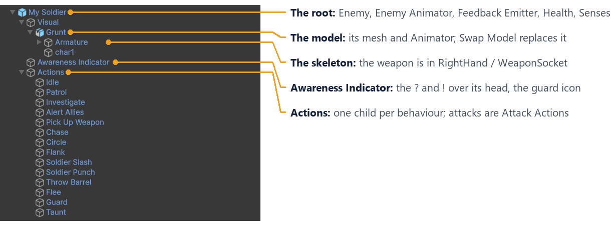
The root holds the components you tune most: Enemy (weapon, reactions, difficulty), Enemy Animator (Swap Model,
Clip Mapping), Feedback Emitter (sounds and effects), Health and Enemy Senses. The data the enemies share is in
the pack's Data folder (Attacks, Considerations, Difficulty), and the sample sounds, effects and feedback profiles
are in Feedback (Audio, Effects, Profiles).
2 Your character
Put your own character on an enemy and keep everything else: its AI, attacks, weapon and guard. One tool does it: Swap Model. It opens from the top of the Enemy component, and it is also the first section of the Enemy Animator. This chapter also shows how to recolour a character.
Before you start:
- A Humanoid rig works straight away: it reuses the enemy's animations. Check it in your model's import settings, on the Rig tab: Animation Type should be Humanoid.
- A Generic rig works too, but it needs its own animations. See "Generic rigs" at the end of this chapter.
- Know your character's height in metres, head to toe. Or leave the height at 0 to keep the old model's height.
2.1 Swap the model
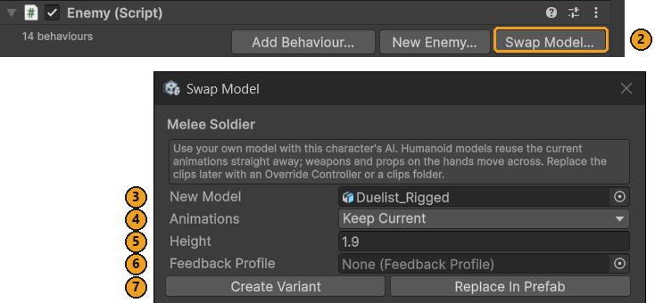
- In the Project window, select the pack's enemy prefab, for example
Prefabs/Enemies/Melee Soldier. - In the Inspector, press Swap Model… at the top of the Enemy component. The Swap Model window opens, set to that enemy.
- New Model: drag in your model, the FBX file or a prefab of it.
- Animations: leave it on Keep Current.
- Height: your character's height in metres. 0 keeps the old height.
- Feedback Profile (optional): your character's own voice and footsteps (Look and sound).
- Press Create Variant. The save dialog opens in your own folder: the last one you saved in with the pack's tools,
or
Assets. Save the variant there.
You now have a Prefab Variant with your model in it. The pack's prefab is unchanged, and your variant keeps getting the pack's fixes. The window follows your selection. What you picked is kept for each enemy, and cleared after a swap.
Already made a variant? Select it in the Project window and press Replace In Prefab: it changes the variant in place, and cannot be undone. Or open it in Prefab Mode, where the section shows a single Swap Model button, then save. That swap is one step: Ctrl+Z puts the old model back.
Selected an enemy in a scene? For an instance of a prefab, the section shows Select Prefab and Open Prefab instead. Swap the model in a prefab, not in one scene object. For an instance of one of the pack's prefabs, press Select Prefab and use Create Variant.
Warning: Don't swap the model in the pack's own prefab: the next pack update puts the old model back. On one of the pack's prefabs, Replace In Prefab, and Swap Model in its Prefab Mode, ask first, "Change the pack's prefab?". Create Variant, the default, saves a Prefab Variant of it in your folder and swaps the model there.
2.2 What moves across
- The weapon. A grip socket is built in the same hand of your model, and the weapon goes into it with its own grip.
- Props on bones, like a shield strapped to a forearm, move to the same bone on your model.
- A Humanoid Guard Pose on the old model is copied to yours (Animations).
- Hit frames are detected again when the animations change.
- Effects are sized to your character: the Feedback Emitter's Visual Scale changes with the height.
- References that pointed into the old model are pointed at yours, and the old model is deleted.
- The body's size, when you give another Height. Everything that depends on it is resized by the same ratio, new height over old: the colliders, the Nav Mesh Agent, Enemy Senses ▸ Eye Height, the Awareness Indicator, the muzzle and hold points, the footstep stride, and, with the same animations, the walk and run clip speeds.
A prop with no matching bone on your model is kept on the character, switched off. The Console lists everything that was done, including what was resized.
Note: A new height leaves attack reach alone. Attack Data are shared by many enemies, so a much bigger or smaller character may need its own copies (Make Unique on each attack) with a longer or shorter Max Range and Hit Reach, or a weapon with another Reach Bonus (Attacks, Weapons).

2.3 Check the result
- Double-click your new variant to open it in Prefab Mode.
- Select the weapon and check its grip through an attack (Weapons).
- Put the variant in a test scene with a NavMesh and your player, and press Play.
- Feet sliding or floating? Press Measure Stride Speeds on the Enemy Animator (Animations).
- Check that it reaches you when it attacks. If not, tune its attacks' reach (Attacks).
2.4 Bring your own animations too
Set Animations before you press Create Variant:
- Override Controller: an Animator Override Controller of the pack's
EnemyBasecontroller, with your clips in it. - Clips Folder: a folder of clips named
Name_Anim_State, for exampleOrc_Anim_IdleandOrc_Anim_Slash1. The tool builds the Override Controller for you (Animations).
Or keep the current clips for now, and replace them one at a time later in the Clip Mapping (Animations).
2.5 Recolour a character
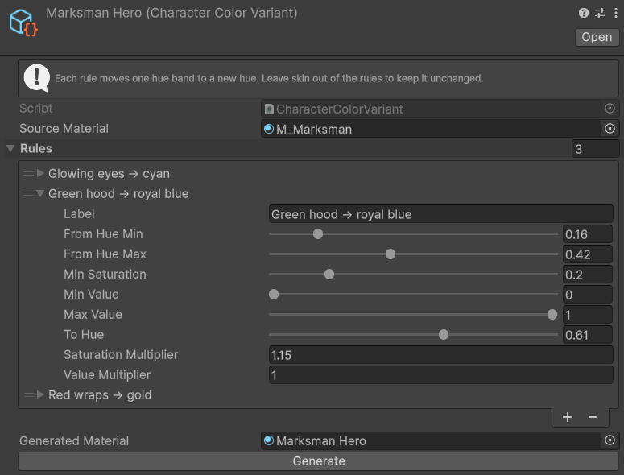
A Character Color Variant makes a recoloured copy of a character's texture and material. Each rule moves one band of
hues to a new hue, so skin can stay as it is while clothes change. The demo's hero is made this way from the Archer's model:
open Demo/Materials/Marksman Hero to see it.
- In your folder, right-click and choose Create ▸ TinnyStudios ▸ RPG Enemies ▸ Character Color Variant.
- Source Material: the material on your character's mesh.
- Add a Rule for each colour to change. From Hue Min and From Hue Max pick the band (0 to 1 around the colour wheel). To Hue is the new hue.
- Leave skin out of the rules to keep it unchanged.
- Press Generate. A new texture and material are saved next to the asset.
- Open your variant, select the model's mesh (the object with the Skinned Mesh Renderer), and put the new material in its Materials list.
Tip: For a quick "elite" look without new art, give your variant a Difficulty Profile with a Tint: the pack's Hard and Elite have one, or tint your own copy of a profile (Behaviour and difficulty).
2.6 Generic rigs
- Keep Current only works for Humanoid rigs. Choose Override Controller or Clips Folder with your own clips.
- Weapons are held by Humanoid hands. On a Generic model, a weapon with no matching bone is kept, switched off. To hold one, add an empty child to the hand bone. Point its blue axis along the blade and its green axis up, and set it as Enemy ▸ Weapon Socket. Then use Replace Weapon (Weapons).
- The guard pose needs a Humanoid, so it is removed. The guard still blocks.
- Measure Stride Speeds and Detect Hit Frames only measure Humanoids. On a Generic character, type the Locomotion Clip Speeds in yourself. Add Hit Markers by hand too: a state, and the moment it hits, from 0 to 1 through the clip.
3 Weapons
Every weapon is a Weapon Item. Where the hand holds it is stored on the weapon itself, in Held Position and Held Rotation, and every pick-up puts it there. The Grip and Size tools edit those two values for you, and move the weapon while you work. This chapter checks a grip through an attack, fixes it, resizes the weapon, gives an enemy another weapon, and makes a weapon from your own model.
3.1 Select the weapon
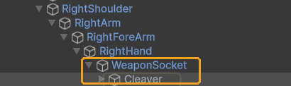
- Open your variant in Prefab Mode (double-click it in the Project window).
- Select the root, and in the Enemy component open Replace Weapon. Press Select Weapon.
- Or find it in the Hierarchy: it is inside the model's right hand, under WeaponSocket.
The weapon's inspector now shows Grip and Size. The socket is the fist: its blue axis (+Z) runs along the blade and its green axis (+Y) points up. Every weapon is set up the same way, so a weapon that fits one hand fits every hand.
Note: To see the weapon in a hand, open the character in Prefab Mode or in a scene. On a prefab selected in the Project window, Select Weapon is greyed out.
3.2 The Grip and Size tools

- Edit Grip: handles at the fist in the Scene view, to move and turn the weapon in the hand.
- Flip: turns the weapon end for end, for a weapon held by its blade.
- Grip Along Length: slides the weapon through the fist, from the back end (0) to the tip (1).
- Grip From Mesh: works the grip out from the mesh again.
- Length (m): resizes the weapon around the fist.
- Adjust Reach: when the length changes, the enemy's reach changes too.
- The status line: how far the tip reaches in front of the fist, and the weapon's Reach Bonus.
- Use Current Transform: keeps a weapon you moved by hand. Greyed out while there is nothing to keep.
- Check Through An Animation: pick a State and press Pose to pose the character.
- The time line: Loop (it reads Pause while the clip plays), the time in seconds, Hit and Stop.
3.3 Check the grip through an attack
A grip that looks right at rest can clip through the arm in the middle of a swing. Pose the character in its real attack clip and look.
- Open Check Through An Animation, at the bottom of Grip and Size.
- State: pick an attack. The character's own attacks are listed first, for example Slash1.
- Press Pose next to the state. The character takes the pose in the Scene view, at the moment the attack hits.
- Drag the time slider to scrub through the swing. Or press Loop to play the clip over and over, and Pause to hold a frame.
- Press Hit to jump back to the hit, and Stop when you are done.
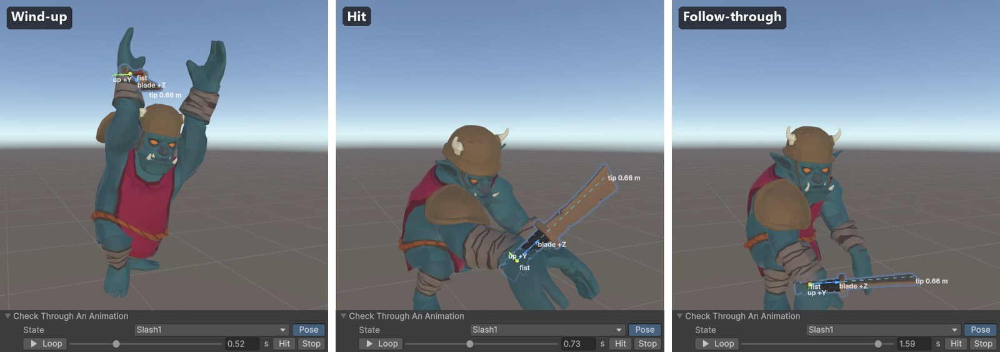
Nothing is changed or saved: the pose goes when you press Stop, select something else, save or press Play.
3.4 Fix the grip
With handles (Edit Grip)
- Press Edit Grip. Handles appear at the fist in the Scene view. The same tool is in the Scene view's Tools overlay.
- Read the markers. The blue arrow, "blade +Z", runs along the blade. The green arrow, "up +Y", points up. A dotted line runs out to the tip and shows its distance.
- Drag a ring to turn the weapon around the fist.
- Drag an arrow to slide the weapon through the hand. The blue arrow slides it along the blade.
- Check it through the attack again. Press Edit Grip once more to put the tool away.
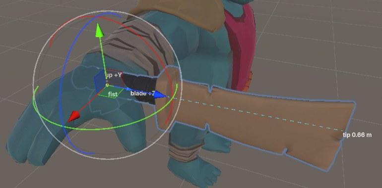
Every change can be undone with Ctrl+Z. For a fine slide along the blade, drag the Grip Along Length slider instead: swords and clubs sit near 0.12, staves near the middle.
Held by the blade? Flip it
Press Flip. The weapon turns end for end. The fist stays the same distance from the back end, and the other end sits in the hand where this one did, so a grip you slid across the handle with Edit Grip is kept.
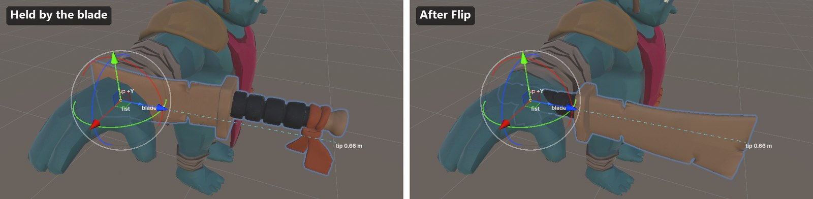
Start again from the mesh (Grip From Mesh)
Press Grip From Mesh when a grip is badly off. It works the grip out the way the pack's own weapons were made. The longest side becomes the blade and its flat stands upright. The fist is centred on the handle at Grip Along Length, and a Flip is kept. Adjust the result with Edit Grip.
Moved it by hand? Keep it or snap it back
The Move and Rotate tools work too. While the weapon is selected, a move you make with them is kept: Held Position and Held Rotation follow it.
If the weapon was moved some other way, the inspector warns how far it is from where the game will put it. Choose one:
- Use Current Transform keeps the weapon where it is now.
- Snap Back puts it back at its Held Position and Held Rotation.
Warning: Do not skip this. When the game starts, and at every pick-up, the weapon goes to its Held Position and Held Rotation. It does not stay where it was left in the editor.
3.5 Make it bigger or smaller
- Type the new length in Length (m) and press Enter.
- The weapon grows or shrinks around the fist, so the handle stays in the hand.
- With Adjust Reach ticked (the default), Reach Bonus grows by how much further the tip now reaches. The status line shows it.
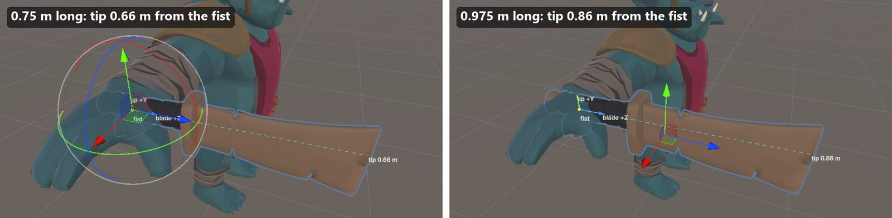
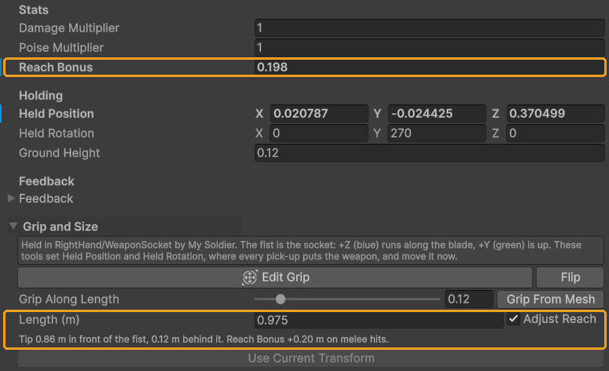
The Melee Soldier's cleaver, made 30 % longer (0.75 m to 0.975 m):
- The tip reaches 0.858 m in front of the fist instead of 0.66 m.
- Reach Bonus goes from 0 to +0.198 m.
- Soldier Slash lands its hit 1.398 m ahead instead of 1.20 m.
- Soldier Slash starts from up to 2.598 m away instead of 2.4 m.
An enemy adds its weapon's Reach Bonus to every melee attack. It is added to Hit Reach (where the hit lands), to Max Range (how far away it starts the attack), and to the follow-ups. So a longer weapon hits further with no change to the attacks. Untick Adjust Reach for a weapon that only looks bigger.
Note: Damage Multiplier and Poise Multiplier count for an enemy's melee attacks too, relative to the weapon it starts with. Its Attack Data are tuned for that weapon, so with it the enemy hits exactly as they say, and a heavier weapon it picks up hits harder. A Melee Soldier (1× cleaver) that grabs the Heavy Club (1.4× damage, 1.8× poise) hits 1.4 times as hard.
Tip: The Scale tool works too. While the weapon is selected, scaling it resizes it around the fist, like Length (m), and with Adjust Reach ticked its Reach Bonus follows.
3.6 Give an enemy another weapon (Replace Weapon)
- Open your variant in Prefab Mode and select its root.
- In Enemy ▸ Replace Weapon, set New Weapon to a weapon prefab, for example
Demo/Prefabs/Weapon Heavy Club. - Press Replace Weapon. The new weapon goes into the same hand with its own grip, Weapon points to it, and the old weapon is deleted.
- Press Select Weapon and check the grip through an attack.
- Save the prefab.
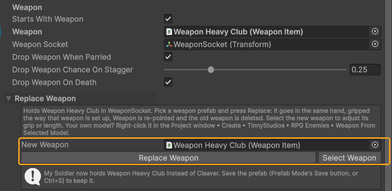
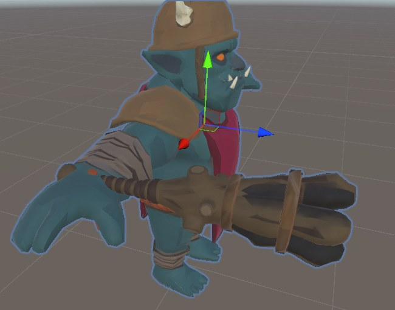
On a prefab selected in the Project window, the button reads Replace Weapon (opens the prefab). It opens Prefab Mode first, so you can undo the change there. On one of the pack's own prefabs it asks first, "Change the pack's prefab?": Create Variant, the default, saves a Prefab Variant of it in your folder and gives the variant the weapon, since a weapon replaced in the pack's prefab is put back by the next update. The same section is on the demo player's inspector.
The new weapon becomes the one the enemy starts with. Its Reach Bonus counts at once, but its multipliers become the enemy's baseline: its attacks hit as their Attack Data say. To make it hit harder, press Make Unique under an attack's Attack field and raise Damage on the copy (Attacks).
A weapon prefab is any prefab with a Weapon Item on its root. The demo has two in Demo/Prefabs: the Cleaver and the
Heavy Club (Reach Bonus +0.3 m). To change the grip or size of one of those for your game, make a Prefab Variant of it in
your folder, change the variant, and use it.
3.7 Make a weapon from your own model
- In the Project window, right-click your weapon model and choose Create ▸ TinnyStudios ▸ RPG Enemies ▸ Weapon From Selected Model. (Or select it and use Tools ▸ TinnyStudios ▸ RPG Enemies ▸ Create Weapon From Selected Model.)
- A prefab called
Weapon <Name>is saved next to the model. The model lies along its length inside it, with a Weapon Item already set up. For a model inside the pack's folders, it asks where to save, starting in your own folder. - Select the new prefab. The grip is worked out from the mesh. The bulkier end is taken as the head, and the fist sits 12 % of the way up from the other end. The Scene view shows where the fist will be.
- The hand holds the head? Press Flip. Wrong size? Set Length (m). A model shorter than 0.25 m or longer than 3 m starts at 1 m.
- Give it to an enemy with Replace Weapon.
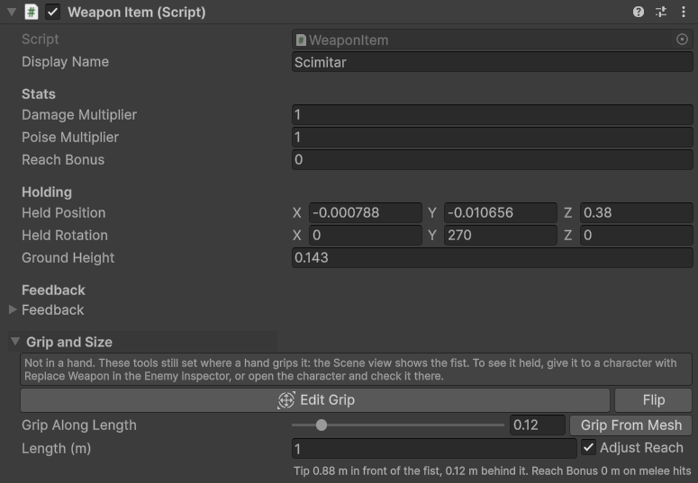
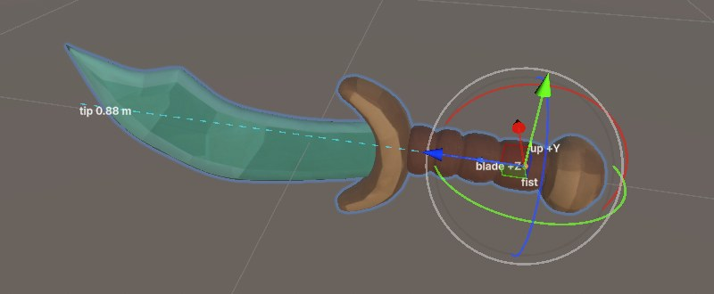
The Console reports the new prefab's length and grip. Ground Height is set so the weapon rests on the floor when it is dropped.
3.8 Weapons lying around to pick up

Enemies drop their weapon when they are parried, sometimes when they are staggered, and when they die. A disarmed enemy with a Pick Up Weapon action runs for the nearest free weapon and picks it up. The demo player can pick weapons up too.
- To place a weapon, drag a weapon prefab into your scene. It is picked up with its own grip, so set the grip on the prefab: for one of the pack's weapons, on a Prefab Variant of it in your folder, and place the variant.
- For a rack, add a Weapon Rack component to an object. It hands a new copy of its Weapon Prefab to each unarmed enemy that comes to it: again your own weapon prefab, or your variant of one of the pack's.
- How far enemies look: Enemy Context ▸ Weapon Search Radius (15 m) and Weapon Rack Search Radius (25 m).
- When they drop it: Enemy ▸ Drop Weapon When Parried, Drop Weapon Chance On Stagger and Drop Weapon On Death. Untick Starts With Weapon for an enemy that must arm itself first.
4 Animations
Every character plays the same base Animator, EnemyBase, through its own Animator Override Controller. That
controller is a list of states, each with the clip this character plays for it. The Clip Mapping in the Enemy Animator inspector shows that
list, and you change a clip by dropping another one on it. This chapter replaces clips, adds new moves in the spare slots
or in states of your own, and fixes sliding feet.
4.1 Open the Clip Mapping
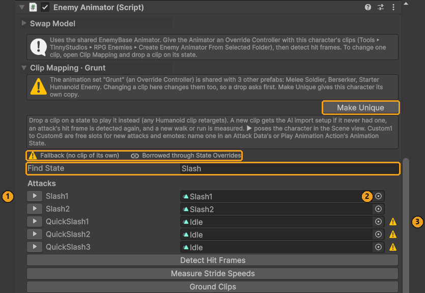
- Open your variant in Prefab Mode and select its root.
- In Enemy Animator, open Clip Mapping. It is near the top, under Swap Model.
- Type in Find State to show only the states you want, for example "Slash".
The states are grouped: Your states first (states you added yourself, see "Add a state of your own" below), then Locomotion, Loops, Held poses, Reactions and one-shots, Attacks, and Spare slots for your own moves. Each row has:
- ▶: poses the character in that state in the Scene view, with a time line under the row.
- The clip: drop another clip here to replace it.
-
A marker at the end of the row, when the state is not playing a clip of its own. The legend above Find State names the two:
- ⚠ Fallback (no clip of its own): the state has no clip, or plays the one its fallbacks fill it with. A character with no QuickSlash clip plays Idle there, for example. That only matters if an attack or action plays the state.
- A link, Borrowed through State Overrides: this Enemy Animator's State Overrides play another state for the animation that uses this one, on purpose.
A clip you drop is never marked, whatever its name. Nor is an empty spare slot. Hover a state's name for what it plays.
4.2 Make Unique first
A Prefab Variant plays the same Override Controller, its animation set, as its original. The yellow warning says so: "The animation set "Grunt" (an Override Controller) is shared with 3 other prefabs: Melee Soldier, Berserker, Starter Humanoid Enemy. Changing a clip here changes them too, so a drop asks first."
- Press Make Unique. It copies the Override Controller next to your prefab, for example
My Soldier.overrideController, and gives it to your variant. - The warning goes, and the foldout now reads Clip Mapping · My Soldier. The original is untouched.
On one of the pack's own characters, Make Unique asks first, "Change the pack's prefab?": Create Variant, the default, saves a Prefab Variant of it in your folder, such as "My Melee Soldier", and gives the variant its own copy. A clip dropped on one of the pack's own prefabs asks the same.
Dropped a clip first? It asks
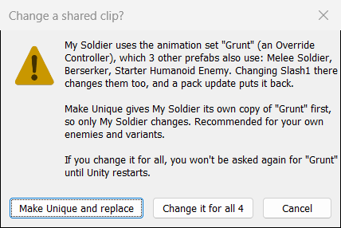
Drop a clip on a controller that other prefabs play too, and Unity asks before it changes anything:
- Make Unique and replace gives your character its own copy first, then puts the clip in the copy. Only your character changes. Choose this for your own enemies and variants.
- Change it for all 4 (the number of prefabs that play it) puts the clip in the shared controller, so every one of them changes. It won't ask again for that controller until Unity restarts.
- Cancel changes nothing.
Warning: Change it for all changes the pack's controller: the original enemy and every other variant of it play it, and the next pack update resets it.
A drop on one of the pack's animation sets that no other prefab plays asks too, "Change the pack's clip?": Make Unique and replace, the default, or Change the pack's, which the next update puts back.
4.3 Replace one clip
- Drag an animation clip from the Project window onto a state's clip. Or click the small circle and pick one.
-
The tool does what the new clip needs, and the status line says what it did:
- a clip file that was never set up gets the import settings AI characters need;
- an attack or other one-shot gets its hit frame detected again;
- a walk or run gets the stride speeds measured again, anything else its height above the ground.
-
Press ▶ on the row to pose the character in the new clip. Scrub it or press Loop, press Hit to see the hit frame, then Stop.
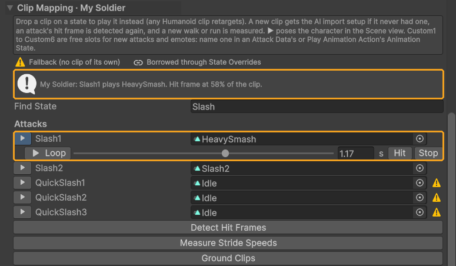
Any Humanoid clip plays on any Humanoid character. So you can borrow clips from the pack's other characters, from the Asset Store or from your own animator. To undo a replacement, press Ctrl+Z. To put a state back on its fallback, clear its clip field (pick None in the clip picker).
4.4 Replace a whole set from a folder
- Name your clip files
Prefix_Anim_State, for exampleOrc_Anim_Idle,Orc_Anim_WalkingandOrc_Anim_Slash1, and put them in one folder. OnlyPrefix_Anim_Idleis required: missing states fall back to similar ones. - Select the folder and run Tools ▸ TinnyStudios ▸ RPG Enemies ▸ Create Enemy Animator From Selected Folder.
- It sets up the clips' import settings and makes
Prefix.overrideControllerin the folder. The Console lists which states fall back, and any clip names that matched no state. (For clips inside the pack's folders it asks "Save in the pack's folder?" first: Save in your folder, the default, asks where.) - Give the controller to your enemy: Swap Model with Animations set to Override Controller (Your character), or drag it onto the model's Animator ▸ Controller.
- Press Detect Hit Frames and Measure Stride Speeds (below the Clip Mapping).
The Manual's Authoring chapter lists every state name and its fallbacks.
4.5 Hit frames, stride speeds and grounding
Three buttons sit under the Clip Mapping:
- Detect Hit Frames finds the moment each attack hits. It reads a Hit Animation Event on the clip if there is one. Otherwise it takes the moment the weapon hand, or the foot for kicks, moves fastest. The results are in Hit Markers, 0 to 1 through the clip; you can edit them by hand.
- Measure Stride Speeds times how fast each walk and run carries the feet, at this character's size, so the feet do not slide. It also measures which states float or sink (Ground Offsets).
- Ground Clips changes the clips' import settings so the feet rest on the ground.
Warning: Ground Clips changes the clip files themselves, and every character that plays them. Use it on your own clips, not on the pack's.
4.6 Add a new move with Custom1 to Custom6
Each character has six spare slots, Custom1 to Custom6, for new attacks and emotes. No code is needed.
- In the Clip Mapping, type "Custom" in Find State. The group Spare slots for your own moves shows.
- Drop your clip on Custom1. Its hit frame is detected, as for any attack. (On a variant, press Make Unique first, or choose Make Unique and replace when the drop asks.)
- Press ▶ to check it.
- For an attack, make an Attack Data and set its Animation State to Custom1 (Attacks).
- For an emote, add a Play Animation Action to the enemy and set its Animation State to Custom1.
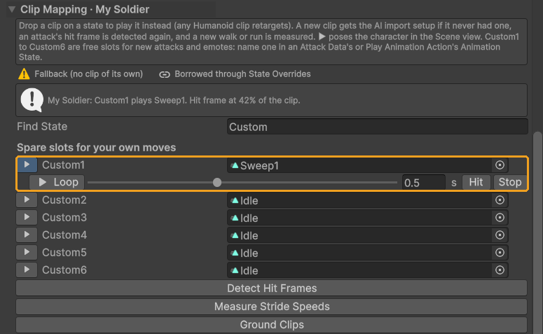
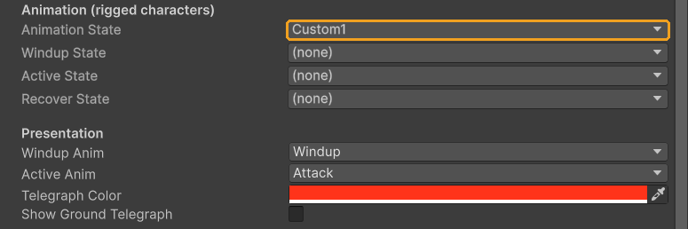
Each character fills its own slots. An Attack Data that names Custom1 plays whatever each character has in Custom1. A character with nothing there plays its generic Attack clip, or Idle.
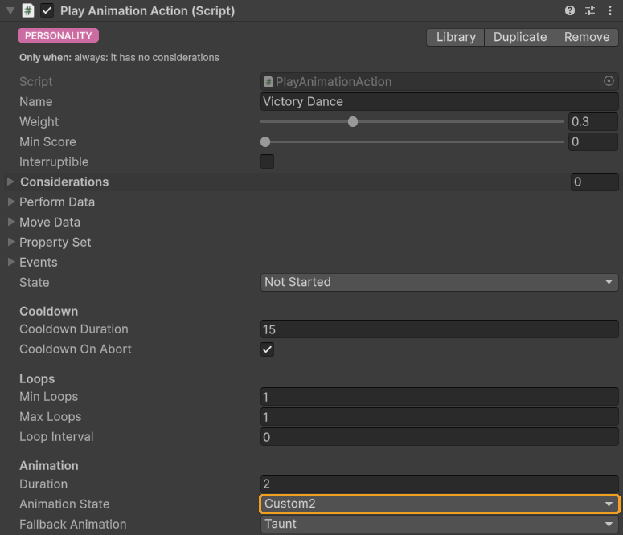
A Play Animation Action stops, faces the target and plays its state for Duration seconds. Taunts, roars and heals are all made with it. Add it to a new child of Actions. Set Name, Weight, Animation State and Cooldown Duration, and give it considerations that say when it should play (Behaviour and difficulty). Effect Cue and On Effect can play a sound or call your own objects at Effect Time.
4.7 Add a state of your own (Add State…)
Six slots not enough, or want a move with a name, such as ShieldBash or WarCry? Add a state of your own. Every character gets it, no code is needed, and a pack update keeps it.
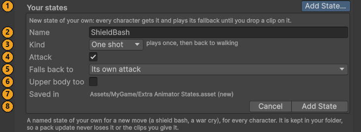
- In the Clip Mapping, press Add State… next to Your states (1), at the top of the list.
- Name (2): letters, digits and underscores, starting with a letter, such as ShieldBash. It is checked as you type: a name the pack already uses, or one of your states has, says why it won't do.
- Kind (3): One shot plays once, then back to walking. Loop loops until another animation plays. Hold plays once and keeps its last frame.
- Attack (4): tick it for an attack. Its hit frame is detected when you drop a clip, and it is listed with the attacks.
- Falls back to (5): what a character with no clip of its own plays instead, then Idle. For an attack it starts on Its own attack: each character plays the first attack clip it has, a creature's Attack, the Melee Soldier's Slash1, the Heavy Melee's HeavySmash and so on, so none of them stands idle.
- Upper body too (6): leave it off. It is for code that plays the state over the legs' walk, as the guard does.
- Saved in (7): an Extra Animator States asset in your folder, made next to your prefab the first time.
- Press Add State (8). Every character now has the state and plays its fallback. Ctrl+Z takes it out again.
- Drop your clip on the new state, as on any state (press Make Unique first on a variant), and press ▶ to check it.
Then name it where the move is chosen: an Attack Data's Animation State, or a Play Animation Action's. Your states are listed first in those menus, under Your states. Edit List, next to Add State…, selects your Extra Animator States asset, where you rename, change or Remove a state.
Your states live in your asset, not in the pack, so a pack update keeps them: the base Animator gets them back by itself, and the Console says so. Each of your characters with its own animation set (Make Unique) keeps the clip you gave it. The pack's own characters play the fallback.
Note: A Hold state keeps its pose only on characters that list it in Enemy Animator ▸ Hold States. Add State… lists it on the character you added it from; add it to your other characters' Hold States yourself.
4.8 Guard without a guard clip
Enemies that guard play a Guard clip on their upper body. A Humanoid character without one can use a Humanoid Guard Pose instead:
- Open your variant and select the model, the object with the Animator.
- Press Add Component and search for Humanoid Guard Pose.
- Style: Shield (the left hand brings a shield up) or Weapon (the weapon held across the body). After changing it, choose Use Style Defaults from the component's menu.
- Shield (optional): the shield object in the left hand.
- Press Play, tick Preview Raised, and tune the stance while you watch.
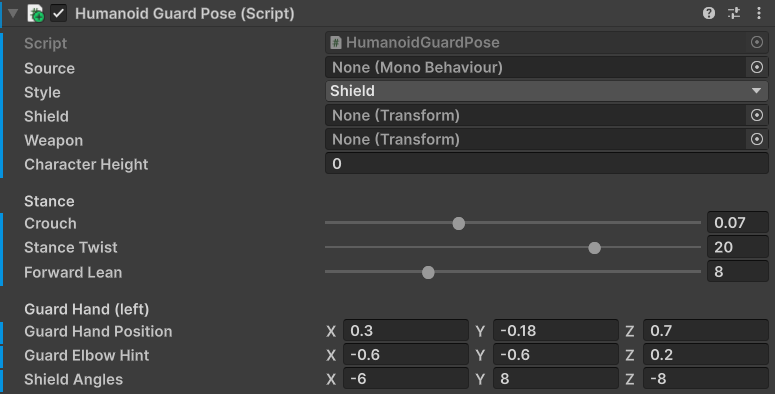
The pose is layered on whatever the character plays, so the guard also works while walking. Hand positions are measured in arm lengths, so the same numbers suit any body. With neither a Guard clip nor a guard pose, a guarding enemy shows a see-through shield, so the player can still read the guard.
5 Attacks
An attack is two things. An Attack Data asset says what the attack is: its range, timing, damage, animation, warning colour and sounds. An Attack Action on the enemy says when to use it. One Attack Data can serve many enemies. This chapter tunes an attack, makes a new one and gives it an animation.
5.1 Tune an attack
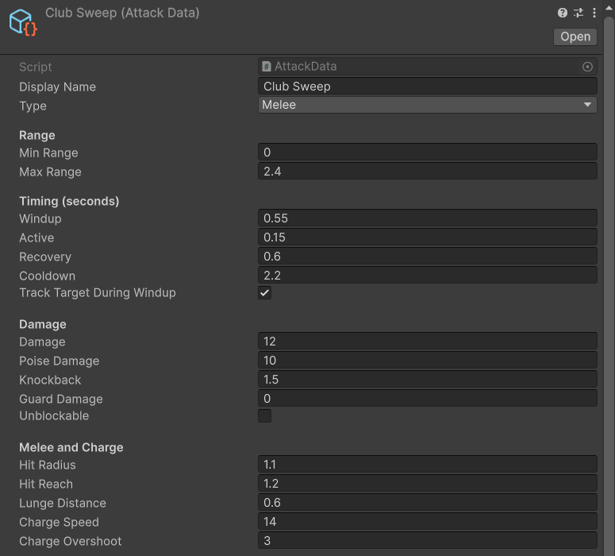
- Open your variant, expand Actions and select the attack, for example Soldier Slash.
- Its Attack field points to the Attack Data. Under it, a note says it is the pack's and how many actions use it: tuning it would change them all. Press Make Unique there.
- Soldier Slash chains into Soldier Slash 2, so it asks "Copy its follow-ups too?". Copy the combo copies both, chained the same way; Only Soldier Slash copies the first one. The copies, My Soldier Slash and My Soldier Slash 2, go next to your prefab and keep their Display Names, and the Attack field now points at yours. Ctrl+Z points it back. Now your change stays yours.
- Click the Attack field to find your copy in the Project window, select it, and change the numbers. The table below says which ones.
- Press Play and try it. You can also change an Attack Data during Play mode and tune while you fight. Unlike most changes made in Play mode, these are kept when you stop.
A melee attack runs in three phases. The wind-up is the warning the player reads, the active part deals the damage, and the recovery is the player's chance to hit back.
| To change | Change these fields |
|---|---|
| How far away it starts the attack | Min Range and Max Range |
| Where the hit lands | Hit Reach (metres in front) and Hit Radius (the size of the hit) |
| How long the warning lasts | Windup |
| How long the opening after it lasts | Recovery |
| How often it can attack | Cooldown |
| How hard it hits | Damage, Poise Damage (stagger), Knockback, Guard Damage (drains a raised guard) |
| Whether it can be blocked | Unblockable |
| Whether the player can sidestep it | Untick Track Target During Windup |
| Combos | Follow Ups and Follow Up Chance. Each follow-up is an Attack Data of its own: Make Unique's Copy the combo gives the attack its own copy of each |
| The warning colour | Telegraph Color, and Show Ground Telegraph for a disc on the ground |
| Its sounds and effects | Feedback ▸ Windup, Release and Impact (Look and sound) |
Note: The difficulty profile scales Windup, Cooldown and Damage, and adds combo hits. Tune at Normal (Behaviour and difficulty).
Tip: A weapon's Reach Bonus is added to Hit Reach and Max Range of melee attacks. To make one enemy reach further, lengthen its weapon instead of changing a shared attack (Weapons).
5.2 Make a new attack
This example gives My Soldier a second swing, Club Sweep, with its own animation.
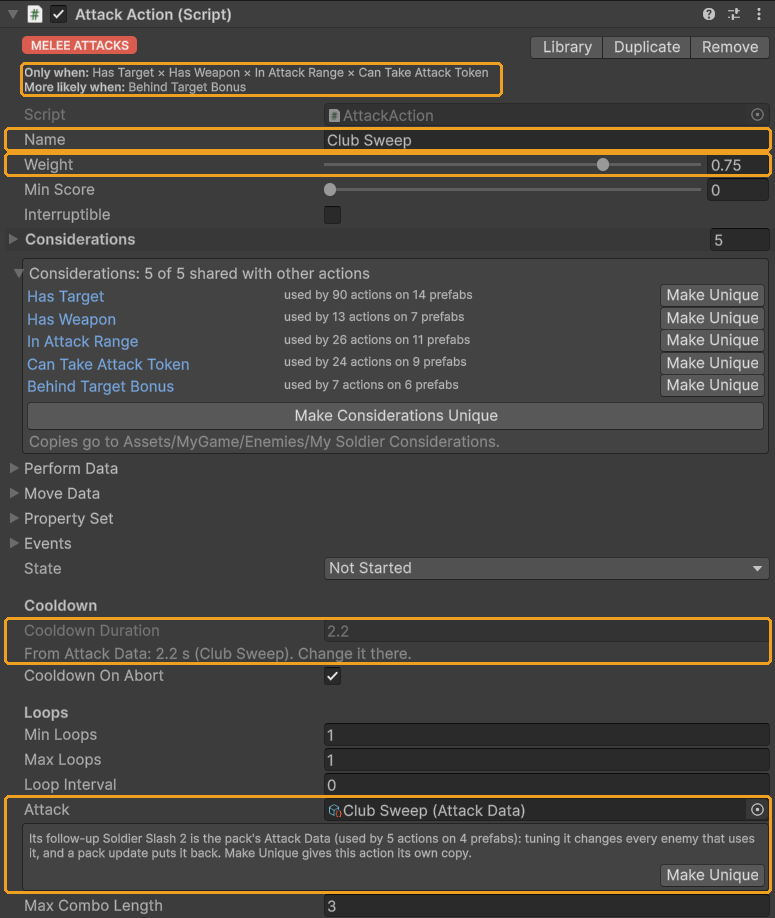
- Make the data. Select
Data/Attacks/Soldier Slash, press Ctrl+D, move the copy into your folder and rename it Club Sweep. (For an empty one, right-click in your folder and choose Create ▸ TinnyStudios ▸ RPG Enemies ▸ Attack Data.) - Set it up. Set Display Name and the numbers. The copy still chains into the pack's Soldier Slash 2: clear Follow Ups for a single hit. For a combo of your own, keep it, and after step 5 press Make Unique under the action's Attack field: it copies Soldier Slash 2 into your folder and chains Club Sweep into the copy.
- Pick its animation. Set Animation State (see "Give it an animation" below).
- Make the action. Open your variant, expand Actions, select Soldier Slash and press Ctrl+D. Rename the copy Club Sweep.
- Point it at the data. On the copy's Attack Action, set Name to Club Sweep, and drag your Attack Data into Attack.
- Keep the considerations. They decide when it may run (see below).
- Try it. Press Play, press F1, and watch Club Sweep among the enemy's scores.
Change Name too: the AI Debug View shows it, and sound profiles look actions up by it. A copy keeps the original's name until you change it; meanwhile the inspector warns that two actions share it, with a button to rename the copy.
The considerations copied from Soldier Slash each score the attack from 0 to 1. The scores are multiplied, so any one at 0 stops the attack. The top of the action's inspector lists them: Only when the ones that can stop it, More likely when the ones that only raise or lower its score:
- Has Target: it is fighting someone.
- Has Weapon: it is armed. Remove this for an unarmed move.
- In Attack Range: the target is inside this attack's own Min Range to Max Range.
- Can Take Attack Token: it is its turn. Only a few enemies attack at once.
- Behind Target Bonus: 0.6 in front of the player, rising to 1 behind: it prefers the player's back.
Weight (0 to 1) is how much the enemy wants this action compared with its others. Soldier Slash has 0.75. The action's Cooldown Duration is greyed out and reads "From Attack Data: 2.2 s": an attack's cooldown is its Attack Data's Cooldown, so set it there.
5.3 Give it an animation
- Animation State plays one clip for the whole attack. The clip is sped up or slowed down so its hit frame lands exactly when the damage is dealt. Pick any state the character has a clip for.
- A new clip? Put it in a spare slot, Custom1 to Custom6, or in a state of your own made with Add State…, and pick it here (Animations).
- Windup State, Active State and Recover State are for attacks made of three clips, like a charge: a wind-up, a looping run and a recovery. Leave Animation State empty to use them.
- Windup Anim and Active Anim are fallbacks for characters without these states, such as those without a rig.
The animation only changes how the attack looks. Where and when it hits comes from the numbers above.
5.4 Make it read well
Players forgive a hard attack they can see coming.
- Telegraph Color: the enemy glows this colour during the wind-up. Red for a normal hit, purple or orange for special ones.
- Show Ground Telegraph: a disc on the ground shows the area during the wind-up. Area attacks should have one.
- Unblockable: a red flash warns the player to dodge instead of block.
- Windup: a longer wind-up is easier to read; 0.4 to 1 s suits most attacks.
- Track Target During Windup: untick it for a lunge or a charge the player can sidestep.

6 Look and sound
Sounds, particles, camera shake, hit-stop and colour flashes all come from the pack's feedback system. Until you add your own, grey placeholders show where effects will go, so a scene looks complete before any art exists. This chapter gives an enemy its own sounds and effects, changes its flashes and warning colours, and restyles the icons over its head.
6.1 Where a sound or effect belongs
| It belongs to | Put it on | Examples |
|---|---|---|
| The character | Its Feedback Profile | Hurt, death and alert sounds, footsteps, a voice |
| The move | The Attack Data's cues: Windup, Release, Impact | A swing, a slam, a battle cry |
| Any action | The action's Feedback ▸ Begin and End cues | A horn, a heal sparkle |
| The weapon | The Weapon Item's Feedback ▸ Equip, Drop, Land | A draw, a clatter |
A cue is the same everywhere. It has Clips (picked at random, with pitch and volume variation) and a Prefab, such as a particle effect. Its extras are Camera Shake, Hit Stop, a colour Flash and a Light.
6.2 Give an enemy its own sounds
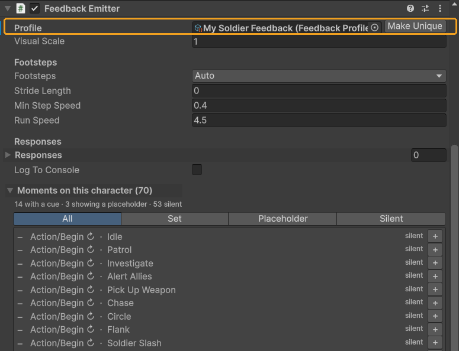
Your variant already uses the Melee Soldier's profile, Feedback/Profiles/Melee Soldier Feedback, one of the pack's. Give
it a profile of its own:
- Open your variant, select the root, and press Make Unique next to Feedback Emitter ▸ Profile. It saves My Soldier Feedback next to your prefab and gives it to your variant.
- The new profile starts empty, with the Melee Soldier's as its Parent. That is better than a copy: My Soldier plays every sound it did, the pack's later fixes to those sounds still reach it, and what you add is for My Soldier only.
- The list Moments on this character shows every moment and where its cue comes from, such as "parent profile". Press + on a row, such as Hurt, to add that moment to your profile. (Pressed while the profile is still the pack's, + asks first, and Make Unique and add does step 1 for you.)
- Open Edit Profile: My Soldier Feedback at the bottom of the component. Each row is one moment, grouped such as Attack and Taking Hits. Open a row's Cue, drag your audio clips onto its Clips list, and a particle prefab onto its Prefab.
- Press Play. In Play mode, a moment's ▶ button plays it on the spot.
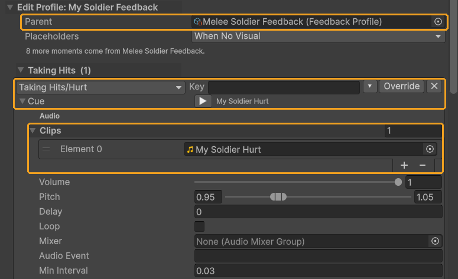
A profile's Parent supplies every moment the profile does not list. The Melee Soldier's own profile has its hurt
grunt, its death thud and poof, and a generic swing and impact. Its parent, Humanoid Base Feedback, has what the
humanoids share: the block clang and sparks, the parry chime, the guard break, the stagger stars and the dodge. Footsteps
are in neither: in the demo scene they come from the Feedback Manager's default profile, Demo/Feedback/Demo Default
Feedback. In your own scene, give your profile a Footstep row.
For your enemy with no profile, press Create next to the empty Profile field. It asks where to save the new profile, starting next to the prefab you are editing, and never in the pack's folders. The profile starts with empty Hurt, Died, Footstep, Blocked and Alert rows. On one of the pack's own prefabs, Create and Make Unique ask first, "Change the pack's prefab?": Create Variant, the default, saves a Prefab Variant of it in your folder and gives the profile to the variant.
Tip: A new model brings a new voice. Set Feedback Profile in the Swap Model section. The hurt, death and alert sounds then change with the model, while the attack sounds stay with the attacks (Your character). Footsteps need no setup; for exact steps, add Animation Events named
Footstepto your own walk and run clips. (Not to the pack's: events live in its clips' import settings, which a pack update replaces.)
6.3 Give an attack its own sound and effect

- Select the attack's own Attack Data, the copy Make Unique made (Attacks), and open Feedback.
- Windup plays from the start of the wind-up until the swing, Release plays with the swing, and Impact plays where it hits.
- Drop audio clips into Clips, and a particle prefab into Prefab. Set Camera Shake and Hit Stop for heavy hits.
- Every enemy that uses your copy now plays it.
Layering decides whether other cues play too. Replace plays only this cue. Add also plays the next one found, so an attack's own crunch can sit on top of the character's usual hit sound.
6.4 Flashes and warning colours
| What the player sees | Where to change it |
|---|---|
| A white flash on every hit | Built in. For another colour, set Flash on the Hurt cue in your own profile (Make Unique, then + on Hurt, above): it replaces the white. |
| The glow during an attack's wind-up | Attack Data ▸ Telegraph Color, on the attack's own copy (Make Unique, Attacks) |
| A disc on the ground during a wind-up | Attack Data ▸ Show Ground Telegraph, in the Telegraph Color, on the attack's own copy |
| A glow while casting | Play Animation Action ▸ Telegraph and Effect Color, on your variant's action |
| A tint that marks the difficulty | Your own Difficulty Profile ▸ Tint and Tint Strength (Behaviour and difficulty) |
| The red flash of an unblockable attack, the green flash of a heal | Built in |
Note: The ground disc is a placeholder. It stops showing once the Windup cue of your copy of the attack has its own Prefab, or when your profile's Placeholders is set to Never. Give your wind-up effect its own marking on the ground.
The flashes and tints colour the renderers listed in Enemy Animator ▸ Tint ▸ Renderers. Empty means every renderer on the model. Swap Model fills it with your model's renderers and leaves the weapon out.
6.5 The awareness icons
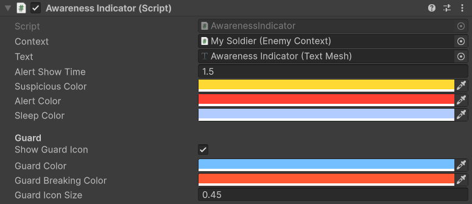
The Awareness Indicator is a child of the enemy. It shows a "?" that grows as the enemy grows suspicious, a "!" when it becomes alert, and a "z" while it sleeps. While the enemy guards, it shows a shield that turns from blue to red as the guard wears down.
- Open your variant and select Awareness Indicator.
- Change Suspicious Color, Alert Color and Sleep Color, and Alert Show Time (how long the "!" stays up).
- Under Guard, change Guard Color, Guard Breaking Color and Guard Icon Size.
- To hide the shield, untick Show Guard Icon. To hide all the icons, untick the Awareness Indicator object.
The icons are drawn with a Text Mesh and a shield sprite. Colours and sizes need no code; a different kind of icon, such as your own sprites or a marker in your game's UI, does: a subclass of Awareness Indicator, or your own UI that reads the enemy's Enemy Senses (the Code Extending guide's "Events for UI and game logic" chapter).

7 Behaviour and difficulty
Every child of Actions is one thing the enemy can do: chase, circle, guard, attack, flee. A few times a second, the enemy scores each action from 0 to 1 and runs the best one. You change its behaviour by changing those scores. This chapter tunes an enemy you already have: it reads the scores, tunes them, changes the enemy's stats, and sets how hard it is.
Note: Build your own mix of behaviours. To give a character behaviours from the pack's other enemies, or to start a new enemy from a template or recipe, see Mix and match behaviours. Behaviour catalog lists every behaviour.
7.1 How an enemy decides

- Each action has a Weight (0 to 1): the most it can ever score.
- Each action has a list of Considerations. Each one answers a question with a score from 0 to 1: "Is the target in range?", "Am I hurt?". The action's score is its Weight times all these scores, so a single 0 stops it.
- The enemy runs the action with the best score. While it runs, the enemy checks the scores again every Reaction Time (0.25 s at Normal). It switches if the running action is Interruptible and another scores clearly higher.
- Considerations are shared assets in the pack's
Data/Considerationsfolder. The Manual's Archetypes chapter lists what each one scores.
7.2 Watch the scores (F1)
- Your test scene needs an AI Debug View on any object. The demo scene has one; in your own scene, use Add Component and search for it.
- Press Play, then F1.
- Above each enemy: its archetype and difficulty, its awareness, the action it is running, and its three best actions with their scores.
![The AI Debug View (F1) over four Melee Soldiers: the running action and the three best scores above each one; [token] marks the one allowed to attack](../images/ai-debug-view.jpg)
An action that never runs is missing from the list or scores 0. One of its considerations is holding it at 0: the Troubleshooting in Checklist lists the usual ones.
7.3 Make it do something more, or less
Open your variant, expand Actions and select an action. The top of its inspector says when it runs: Only when lists the considerations that can rule it out, and More likely when the ones that only raise or lower its score. Hover one to see what it asks.
- Weight: raise it to make the action win more often. Lower it to make it rarer.
- Considerations: add one to add a condition, remove one to drop it. Drag them in from
Data/Considerations. - Cooldown Duration: seconds before the action can run again. On an attack it is greyed out and reads "From Attack Data": press Make Unique under its Attack field, then set Cooldown in the copy instead (Attacks).
- Interruptible: lets the enemy drop the action halfway for a better one. Keep attacks uninterruptible, so they stay readable.
- To switch an action off, untick its object in the Hierarchy. The enemy ignores switched-off actions.
Most actions have their own settings below the shared ones, such as Chase ▸ Run Speed, Circle ▸ Radius and Strafe Speed, or Guard ▸ Skill and Max Guard. The Manual's Archetypes chapter lists the settings worth changing for each enemy. Circle ▸ Radius 0 is automatic: a ring just inside the enemy's own reach, so it can attack straight from the circle. The line under Radius says where it circles.
The inspector also warns about two mix-ups:
- Two actions with the same Name, as a copy made with Ctrl+D has. F1 and the Feedback Profile's keys can't tell them apart. The button under the warning, such as Rename to "Flank 2", gives this one the next free name.
- Two actions that always score the same: the same Weight and considerations (and, for attacks, the same Attack Data). When both can run, the one listed first always wins. Change one's Weight or cooldown so they differ.
Tip: Two actions flicker back and forth? Raise Commitment Bonus on the root's Utility Planner: a new action must then beat the running one by that much before the enemy switches.
Tip: Some actions carry Random Variety, a consideration that scores 0.5 to 1 at random. It never rules the action out, but spreads it over time. Taunt has it, so the enemy taunts now and then rather than whenever it can. Remove it for a taunt you can predict.
7.4 Tune a consideration
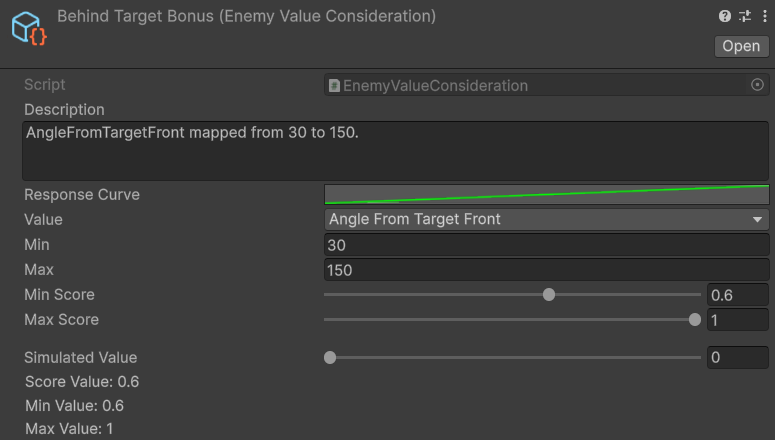
Considerations are shared by many actions and enemies. Before you change one, give the action its own copy: press Make Unique next to it in the action's inspector (Mix and match behaviours). On one of the pack's own prefabs it offers Create Variant first, and makes the copy for a variant in your folder.
- Enemy Value turns a number into a score. Value picks the number: the distance to the target, health, allies nearby and so on. Min and Max set its range, the Response Curve shapes it, and Min Score and Max Score set the scores at each end.
- Enemy Flag turns a yes or no into a score. Flag picks the question and Invert flips it. True Score and False Score set the two scores.
- Attack Range scores 1 inside the action's own attack range. Edge Score is its score at the edges, and Require Line Of Sight is for ranged attacks.
- Composite combines others: Any takes the best of them (an "or"), All multiplies them (an "and").
Drag Simulated Value in a consideration's inspector to see the score it would give.
The questions and numbers come from fixed lists. A new question needs code: a new kind of consideration (the Code Extending guide). Do not add entries to the pack's own lists: the next update replaces them.
7.5 Stats: health, senses and speed
Select the root of your variant:
- Health: Max Health, and Max Poise, the hidden stagger meter. Each hit's poise damage lowers it; at 0 the enemy is staggered.
- Enemy Senses: Sight Range, Field Of View, Hearing Multiplier, and Awareness Gain Per Second, how fast the "?" fills while it sees the player.
- Enemy: Stagger Duration, and Knockback Multiplier (0 means it cannot be pushed).
- Speed: each moving action has its own speed, such as Chase ▸ Run Speed. The difficulty scales them all.
7.6 Difficulty profiles

The pack's Data/Difficulty folder has Easy, Normal, Hard and Elite. A profile changes an enemy without
touching its actions.
- Duplicate the closest one (Ctrl+D) into your folder, or right-click in your folder and choose Create ▸ TinnyStudios ▸ RPG Enemies ▸ Difficulty Profile. Don't change the pack's four: every enemy that uses them would change, and the next update puts them back.
- Set its multipliers: health, damage, move speed, awareness, wind-up and cooldown.
- Set Reaction Time: how often the enemy thinks again. Lower is sharper.
- Set Dodge Chance and Guard Chance, Extra Combo Hits and Extra Attackers (more enemies attacking at once). A group allows the most Extra Attackers that any of its members' profiles asks for.
- Give it a Tint and Tint Strength so players can tell the tiers apart.
- Drag it into your variant's Enemy ▸ Difficulty.
Note: Reaction Time replaces the Reevaluate Interval on the enemy's Utility Planner when the enemy starts. To change how often an enemy thinks, change Reaction Time on your own profile.
Switching the difficulty while the game runs, from your own menu, needs one line of code. The Manual's Quick Start chapter shows it.
8 Mix and match behaviours
The pack's eight enemies are built from one set of parts: 45 behaviours, from dozing by the fire to a boss's phase roar. Any of them works on any enemy, with no code. This chapter builds your own enemy from them: browse the Behaviour Library, add behaviours, tune them, or start a whole new enemy with the New Enemy wizard. Four recipes show the process with real numbers, and a worksheet helps you plan your own. Behaviour catalog lists every behaviour. Most pictures show two example enemies made this way, the Orc Raider and the Orc Warchief; the inspector close-ups show My Soldier, the variant from the earlier chapters.
8.1 How mixing works
A behaviour is one action under the enemy's Actions object, such as Flank or Heavy Charge. It carries its own Weight, and considerations that say when it makes sense (Behaviour and difficulty). A few times a second, every behaviour on the enemy scores itself, and the highest score runs. That is the point of utility AI: there are no transitions to wire. A behaviour you add is one more option to score, and it already knows when it applies.
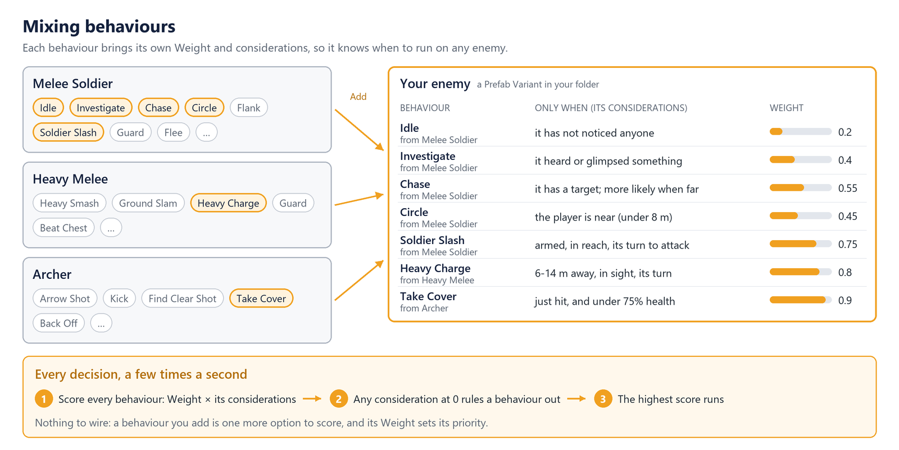
So mixing comes down to two choices: which behaviours an enemy has, and how much it wants each one. The library sorts a behaviour's considerations into two lists:
- Only when: considerations that can score 0. Any one at 0 rules the behaviour out: no target, out of range, not its turn to attack.
- More likely when: considerations that never reach 0. They raise or lower the score but never stop it. Mind their low end: Heavy Charge's Guard Breaker Bonus is 1 while the player blocks and 0.5 otherwise, so most of the time the charge scores about half its Weight.
A copied behaviour brings its Weight, cooldown and settings, and uses the same considerations, Attack Data and projectile or minion prefab: the pack's shared assets, not copies. It takes the rest from the enemy it joins: the clips for its animation states, a weapon, and whatever partner, allies, props or boss phases it needs. The library's Needs list checks those for you.
8.2 Browse the Behaviour Library
Open it from Tools ▸ TinnyStudios ▸ RPG Enemies ▸ Behaviour Library, from Add Behaviour… on an enemy's Enemy component, or from Library on an action's inspector, which opens it on that behaviour.
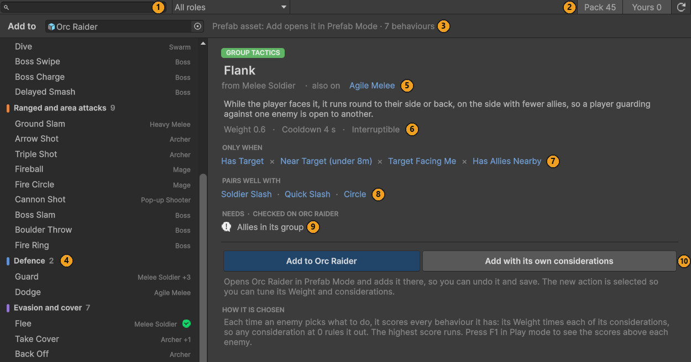
- Search and the role filter. Search matches names, roles, descriptions, enemies and considerations: try "behind".
- Pack 45 and Yours: the pack's behaviours, and your own set-ups ("Your versions join the library", below).
- Add to: the enemy the buttons add to. It follows your selection, and says where that enemy is and how many behaviours it has. A Pack prefab chip warns when you aim at one of the pack's archetypes, and Add then asks first (below).
- The list, by role. Each row names the enemy it comes from; "+3" means three more set-ups on other enemies. A green tick means your enemy already has it.
- The set-ups. Click another enemy to see its version: Chase runs at 4.5 m/s on the Melee Soldier, 3.2 m/s on the Heavy Melee.
- What it does, its Weight, Cooldown, and Interruptible or Runs to the end. Attacks add their range, wind-up, damage and combo.
- Only when, and More likely when. Hover a consideration to see what it asks and how widely it is shared; click it to select the asset.
- Pairs well with: behaviours that complete this one. Click one to jump to it. For action scripts of your own, a
programmer fills it with
[PairsWellWith](the Code Extending guide). - Needs, checked on the enemy in Add to. A green tick is in place. Yellow works, but borrowed or partial ("ChargeWindup animation: borrows Taunt"). Red is missing: it never runs, or looks wrong ("QuickSlash1 animation: none, plays Idle"). A grey note is something to set up in your level ("Allies in its group"): allies and props are only counted for an enemy placed in an open scene. Click a need to highlight what fixes it.
- Add to your enemy, and Add with its own considerations (next section).
Action scripts of your own, written with the Code Extending guide, are listed first, under Your action types, even before an enemy uses them.
8.3 Add a behaviour to your enemy
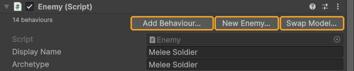
- Select your enemy: a variant in your own folder (Start here), in the Project window, in Prefab Mode or in a scene.
- Press Add Behaviour… at the top of its Enemy component.
- Pick the behaviour, and read its Needs.
- Press Add to your enemy. A prefab in the Project window opens in Prefab Mode first, so the change can be undone. Aimed at one of the pack's own prefabs, Add asks first, "Change the pack's prefab?": Create Variant, the default, saves a Prefab Variant of it in your folder, such as "My Melee Soldier", and adds the behaviour there.
- The new action is selected: set its Weight (next section).
- Save the prefab (Ctrl+S in Prefab Mode). In a scene, save the scene. Overrides ▸ Apply writes the change into the prefab: use it only on an instance of your own prefab. On one of the pack's, it changes the pack's prefab, and the next pack update puts it back.
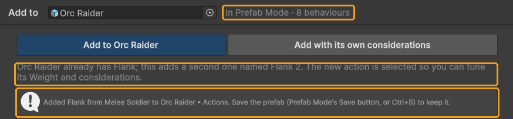
Add to copies the action under your enemy's Actions, with its settings. Its Attack Data, any projectile or minion prefab, and its considerations stay the same shared assets. A second copy of a behaviour is renamed, such as Flank 2. Ctrl+Z undoes it all. Stop Play mode first. To tune an attack you added, press Make Unique under its Attack field first (Attacks).
Add with its own considerations also copies the considerations into a [Prefab] Considerations folder next to your prefab, named like "Low Health (Flee)". Use it when you plan to change when the behaviour runs, on this enemy only.
To take a behaviour off, press Remove at the top of its inspector. To switch it off for a while, untick its object.
8.4 Make it yours
Set the weights
A Weight is the most a behaviour can score, so it sets its priority. The pack's own weights make a good scale:
| Weight | What sits there | Pack examples |
|---|---|---|
| 0.2-0.25 | Something to do when nothing else can run | Idle 0.2, Patrol 0.25 |
| 0.3-0.55 | Moving about: closing in, waiting a turn | Circle 0.3-0.5, Investigate 0.4, Chase 0.5-0.55 |
| 0.45-0.7 | Tactics and character | Taunt 0.45-0.5, Throw Barrel 0.6-0.65, Flank 0.6-0.65 |
| 0.7-0.85 | Attacks | Soldier Slash 0.75, Heavy Charge 0.8, Kick 0.85 |
| 0.8-0.95 | Reactions that should win the moment they apply | Alert Allies 0.85, Guard 0.8-0.9, Flee 0.9, Dodge 0.95 |
| 1 | Always first when it applies | Phase Roar |
The gaps matter more than the numbers: an attack at 0.75 beats Chase at 0.55 whenever both fully apply. To make a behaviour win more often, raise it, or lower its rivals.
Give it its own considerations
Consideration assets are shared: in the picture, Has Target alone is used by 89 actions on 14 prefabs. Tune one in place and you change them all, the pack's enemies included, and the next pack update resets it. So copy first:
- Select the action. Under its Considerations, a box says how many it shares ("4 of 4 shared with other actions"), and how widely each one is used.
- Press Make Unique on one row, or Make Considerations Unique for all of them.
- The copies go to a [Prefab] Considerations folder next to your prefab, named after the action, such as "Has Target (Flank)". Tune them (Behaviour and difficulty): nothing else changes.
On one of the pack's own prefabs, both buttons ask first, "Change the pack's prefab?": Create Variant, the default, saves a Prefab Variant of it in your folder and makes the copies for the same action there.
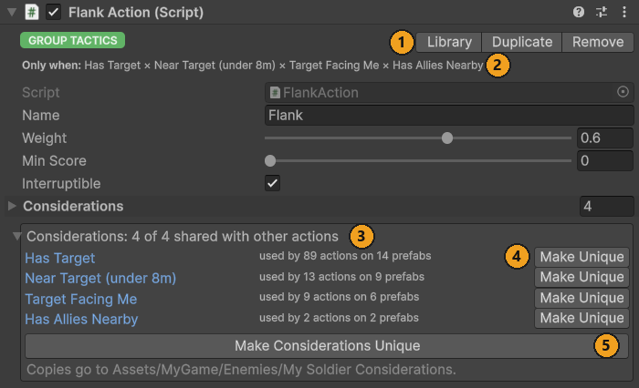
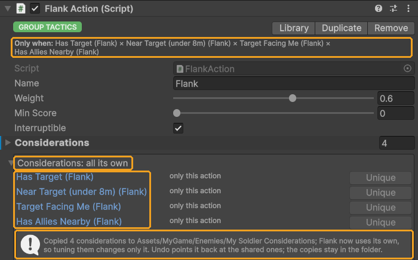
Undo points the action back at the shared assets, and leaves the copies in the folder. The same inspector row has Duplicate, which copies the action next to itself as "Flank 2", and Remove.
Read the scores to see why (F1)
Put your enemy in a test scene with an AI Debug View (Behaviour and difficulty), press Play and F1, and set up the moment you are testing. Above each enemy: the running action, then its three best scores.
| You see | It means | Try |
|---|---|---|
| It scores 0, or never shows | An Only when consideration is 0 | Read its Needs, and hover its considerations in the library |
| It scores, but always loses | Its Weight, or a More likely when at its low end | Raise its Weight, or lower the winner's |
| It wins too often | Nothing holds it back | Lower its Weight, lengthen its cooldown (an attack's is on its Attack Data: Make Unique first), or add an Only when |
| Two behaviours keep swapping | Their scores are too close | Raise Commitment Bonus on the Utility Planner (Behaviour and difficulty) |
Note: F1's scores are close to Weight × the considerations, and a little higher for actions with several considerations: the maths evens them out, so asking more questions is not a penalty.
Your versions join the library
Save a tuned behaviour on one of your enemies, and it joins the library as Yours. Turn Pack off to see only yours, and add your tuned versions to your other enemies. Only what you changed is listed: a behaviour your variant inherited unchanged stays under the pack's.
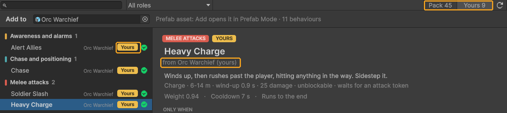
8.5 Start a new enemy with the wizard
The New Enemy wizard makes a whole enemy in one window: a Prefab Variant of the enemy you start from, with the behaviours you pick. Open it from Tools ▸ TinnyStudios ▸ RPG Enemies ▸ New Enemy…. Or right-click a folder in the Project window and choose Create ▸ TinnyStudios ▸ RPG Enemies ▸ New Enemy… to save there. Or press New Enemy… on an enemy's Enemy component to start from that enemy. Then work down its five steps:
- Start from: Templates, Recipes, Archetypes or Yours, or drop any enemy prefab in the field. Its model, animations, weapon and senses come along. The Starter template is the default.
- Name and folder. The name is also the Display Name and Archetype that F1 shows. The folder starts as the
last one you saved in with the pack's tools, or
Assets; pick another with …. A folder inside the pack gets a warning, since a pack update overwrites it. - Model (optional): your model, its Animations and Height, as in Swap Model (Your character).
- Behaviours. The start's own are ticked ("in Starter Humanoid Enemy"): untick one to leave it out. Tick any other to copy it in ("from Heavy Melee"), and set its weight. Where several enemies have it, a menu picks whose version. A ⚠ means something is missing or borrowed: hover it. Ticked only shows just the new enemy's list.
- Personality (optional): two sliders, below.
Press Create Enemy. The wizard saves a Prefab Variant of the start, selects it, and reports what it left out, added and changed. Its footer then shows what it made, with Open It and Make Another. Make Another keeps your choices and clears the name, so the next enemy gets a name of its own. As a variant, your enemy keeps receiving the pack's fixes to the enemy it started from.
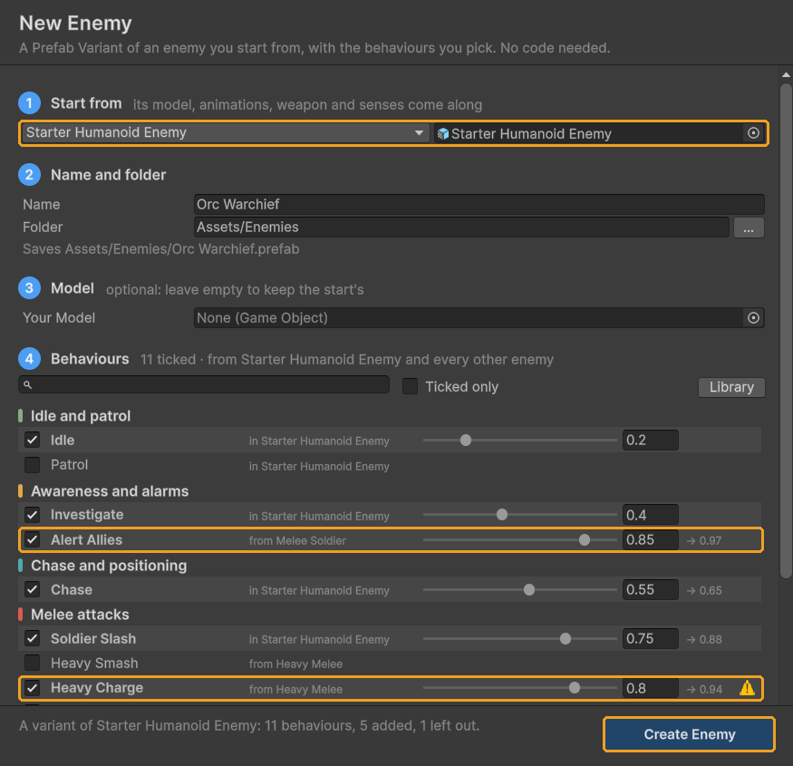
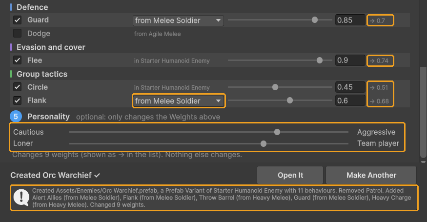
The personality sliders only multiply weights, by up to 35% at either end; → in the list shows each result. In the picture, Aggressive about halfway takes Guard from 0.85 to 0.7.
- Aggressive raises attacks, Chase, Throw Barrel and taunts, and lowers Guard, Dodge, Take Cover, Flee, Back Off, Keep Distance and Teleport. Cautious does the opposite.
- Team player raises Alert Allies, Circle, Flank, Heal Ally and Summon Swarm. Loner lowers them.
Tip: The ⚠ checks the enemy you start from. If you gave the new enemy your own animations, check its behaviours in the library again once it is made.
8.6 The Starter template
Prefabs/Templates/Starter Humanoid Enemy is the wizard's default start: a variant of the Melee Soldier with one
behaviour for each moment of a fight, and nothing else. It keeps the Grunt model, a full set of humanoid clips, the
Cleaver and the sample sounds, and it receives pack updates. Its seven behaviours:
- Idle (0.2) and Patrol (0.25) before the fight. Patrol needs waypoints from your level, or it never runs.
- Investigate (0.4) for a noise or a glimpse: the "?".
- Chase (0.55) to close in, and Soldier Slash (0.75), its one attack.
- Circle (0.45) while another enemy holds the attack token. Without it, enemies waiting their turn have nothing to do and stand still; with it, a group sizes the player up.
- Flee (0.9) to get away when badly hurt and alone.
Its Circle keeps the Melee Soldier's automatic ring (Radius 0): just inside its own reach, 2.1 m with Soldier Slash's 2.4 m, so it can swing straight from the circle. Give an enemy made from it another attack and the ring follows. A fixed ring wider than its reach would leave a lone Starter circling a player who stands still, never swinging ("It circles outside its reach", below).
One setting differs from the Melee Soldier: weapon drops are off. Drop Weapon When Parried is unticked and Drop Weapon Chance On Stagger is 0, because its one attack needs its weapon and it cannot fight unarmed. For a disarmable enemy, make one from the Starter with New Enemy…, tick Pick Up Weapon and Soldier Punch in its Behaviours step, then tick Drop Weapon When Parried again on the new enemy. Change your enemies, not the template: it is one of the pack's prefabs, and an update puts it back.
8.7 Four recipes
The four enemies in Prefabs/Recipes were made only by mixing: a variant of one archetype, some behaviours left out,
one copied in from another, and new weights. No code, no new considerations or attacks. To build on one, pick it under
Recipes in the wizard.
Assassin
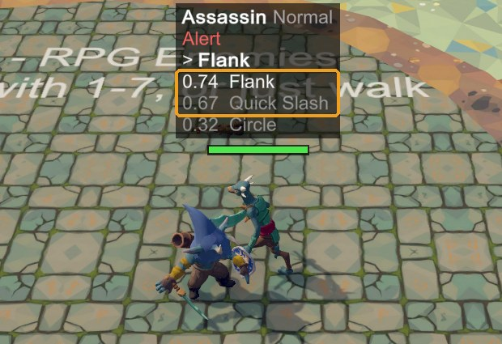
Slips behind you while you face it, strikes from behind, dodges your swings, and backs off into cover when hurt.
Made from the Agile Melee, without Guard and Taunt, plus the Archer's Take Cover. Weights: Flank 0.65 → 0.9, Quick Slash 0.75 → 0.85, Lunge 0.8 → 0.5, Circle 0.5 → 0.35.
In Play mode, facing the player, F1 showed Flank 0.74 beating Quick Slash 0.67. From behind, Quick Slash scored 0.81, against 0.63 from the front: its Behind Target Bonus at work. It still dodged swings. Its Needs warn that Take Cover wants walls, pillars or rocks: in the open, it gives up at once.
Berserker
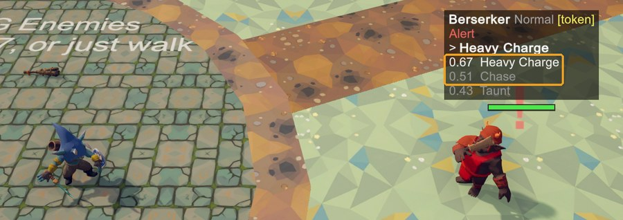
Never guards and never runs: it charges in from range, slashes and punches hard, hurls barrels and pounds its chest.
Made from the Melee Soldier, without Guard, Flee, Flank and Alert Allies, plus the Heavy Melee's Heavy Charge (its wind-up borrows the Grunt's chest-pounding Taunt clip, which suits it). Weights: Heavy Charge 0.8 → 1, Soldier Slash 0.75 → 0.9, Soldier Punch 0.7 → 0.85, Pick Up Weapon 0.8 → 0.9, Taunt 0.5 → 0.6, Chase 0.55 → 0.6, Circle 0.45 → 0.25.
Tip: Read the scores. The first Berserker never charged: F1 showed Chase winning every time. The library showed why: Heavy Charge's More likely when holds Guard Breaker Bonus, 1 while the player blocks and 0.5 otherwise. Against a player not blocking, the charge at 0.9 scored about 0.6 and lost to Chase at 0.7. With the charge at 1 and Chase at 0.6, it charged on sight: 0.67 against Chase's 0.51.
Sniper
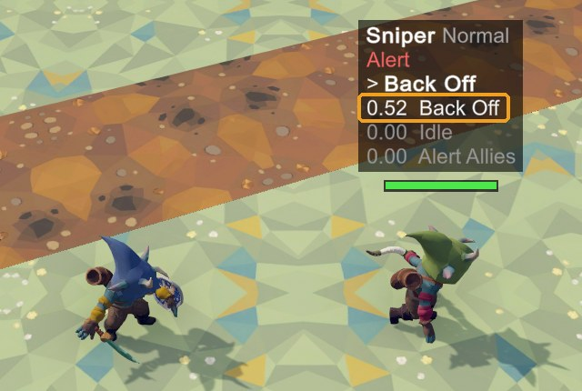
A marksman that keeps its distance and backs away when you close in.
Made from the Archer, without Triple Shot and Kick, plus the Melee Soldier's Flee. Weights: Back Off 0.8 → 0.95, Arrow Shot 0.75 → 0.85, Find Clear Shot 0.7 → 0.8, Seek High Ground 0.4 → 0.75.
In Play mode, Arrow Shot scored 0.85 at 13 m. Close in and it backs away, Back Off scoring 0.52 to 0.84, higher the nearer you get: with no Kick, it cannot fight up close. When it is losing, Flee sends it to a hidden spot.
Medic
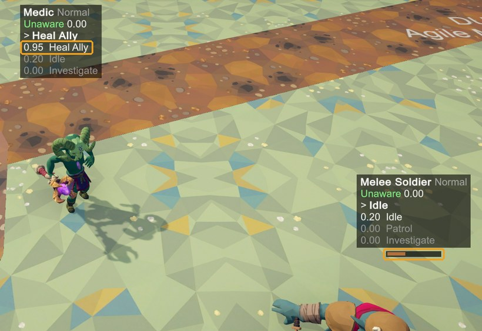
Heals the wounded, raises the alarm, and keeps out of reach.
Made from the Mage, without Fire Circle, Summon Swarm and Teleport, plus the Melee Soldier's Alert Allies. Weights: Heal Ally 0.85 → 0.95, Keep Distance 0.6 → 0.8, Fireball 0.7 → 0.45, Find Clear Shot 0.5 → 0.4.
In Play mode, it woke two unaware soldiers with its alarm, and healed one from 33% to 92% health, Heal Ally scoring 0.95. It only needs an ally within 12 m under 60% health, so it heals even before it notices the player.
8.8 Common gotchas
It needs a partner, a prop or allies
Some behaviours only work with something else on the enemy or in your level. The Needs list names it.
| Behaviour | Needs |
|---|---|
| Hide, Emerge | Each other. Without Emerge, it hides and never comes back up |
| Flank, Alert Allies, Heal Ally | Allies in its group: children of the same Group Coordinator, or every enemy without one |
| Throw Barrel | Throwables in the level (a Throwable component), such as Demo/Prefabs/Explosive Barrel |
| Pick Up Weapon | Dropped weapons or a Weapon Rack within reach, and a hand to hold them (Weapon Socket) |
| Take Cover, Flee | Walls, pillars or rocks. In the open, Take Cover gives up at once and Flee just runs |
| Patrol | Waypoints, set on the enemy once it is placed in your level |
| Phase Roar, Fire Ring | Boss phases: Enemy ▸ Phase Thresholds |
Pick Up Weapon, Throw Barrel, Guard and Take Cover were made for enemies on foot, and warn on a flyer.
It lacks an animation, so it plays another
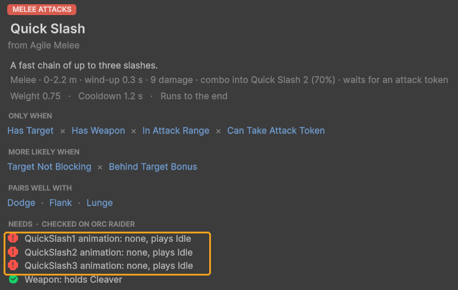
Behaviours play Animator states by name, such as QuickSlash1, and your enemy plays its own clip for each state. Without one, it falls back: to a similar clip (yellow, "borrows Taunt"), or to Idle (red, "none, plays Idle"). An attack on Idle looks like an enemy that hurts you while standing still.
To fix it, open your enemy's Enemy Animator ▸ Clip Mapping, press Make Unique, and drop a clip on each state the
list names (Animations). Any Humanoid clip works, the pack's included: the Agile Melee's slashes are
Models/04_Duelist/Duelist_Anim_QuickSlash1 to 3.
It circles outside its reach
Circle keeps an enemy on a ring around the player while another enemy holds the attack token. With Radius 0, the ring sits just inside the enemy's own reach, and follows its attacks and weapon. A fixed Radius wider than every attack's reach leaves In Attack Range at 0, so a lone enemy facing a player who stands still circles forever. Under Radius, Circle's inspector says whether it can attack from its ring: if not, set Radius to 0. A wider fixed ring suits an enemy with a long-range move, such as the Agile Melee's Lunge (2.5-6 m).
Two actions share a Name
F1 then lists both under one name, a Feedback Profile row keyed by that name plays for both, and the library cannot tell them apart. Add to and Duplicate rename the copy (Flank 2), but Ctrl+D in the Hierarchy keeps the original's Name. The action's inspector then warns, with a button to rename it (Rename to "Flank 2").
A shared consideration changed every enemy
A consideration asset is shared by every action that uses it, on every enemy, and the next pack update resets it. Before you tune one, press Make Unique, or add the behaviour with its own considerations.
8.9 Design your own: a worksheet
Plan an enemy before you open the wizard: pick one or more per row. The example is the Orc Warchief from the pictures, and the catalog (Behaviour catalog) has the details of every behaviour.
| Step | Pick from | Example: Orc Warchief | Your enemy |
|---|---|---|---|
| 1. Its job | Front line: Starter, Melee Soldier · duelist: Agile Melee · bruiser: Heavy Melee · ranged: Archer · caster or healer: Mage · flyer: Swarm · turret: Pop-up Shooter · set piece: Boss | A front-line leader: the Starter | |
| 2. Before the fight | Idle, Patrol, Investigate · Alert Allies to raise the alarm | Idle, Investigate, Alert Allies | |
| 3. The way in | Chase · Find Clear Shot, Seek High Ground · Teleport · a charge | Chase, and Heavy Charge from range | |
| 4. Waiting its turn | Circle, for any melee enemy in a group · Flank · Taunt, Beat Chest · Throw Barrel | Circle, Flank, Throw Barrel | |
| 5. Attacks | One to three from Melee attacks, or Ranged and area attacks | Soldier Slash, Heavy Charge | |
| 6. Defence | Guard · Dodge · Back Off, Keep Distance | Guard | |
| 7. The way out | Flee · Take Cover · Hide and Emerge · none, for a berserker | Flee | |
| 8. Team work | Alert Allies · Heal Ally · Summon Swarm · Pick Up Weapon, for itself | Alert Allies | |
| 9. Personality | Cautious ↔ Aggressive · Loner ↔ Team player | Aggressive about halfway, Team player a little less |
Then check it: no red Needs in the library, and the yellow ones look right; Circle able to attack from its ring (its inspector says so); its partners and props in your level. Last, press Play and F1: each behaviour should win at least once, in the moment it is for.
9 Checklist
A fifteen-minute run through everything in this guide, then the problems people meet most, and short answers to common questions.
9.1 Make an enemy your own in 15 minutes
| Minutes | Step | Chapter |
|---|---|---|
| 1 | Select a pack enemy and press Swap Model… on its Enemy component. Set New Model and Height, press Create Variant, and save it in your own folder. | Your character |
| 1 | Open the variant. In Enemy ▸ Replace Weapon, give it a weapon, or first make one from your model (Create ▸ TinnyStudios ▸ RPG Enemies ▸ Weapon From Selected Model). | Weapons |
| 2 | Press Select Weapon. In Check Through An Animation, press Pose on an attack and scrub it. Fix the grip with Edit Grip or Flip. | Weapons |
| 1 | Set the weapon's Length (m), with Adjust Reach ticked. | Weapons |
| 2 | In Enemy Animator ▸ Clip Mapping, press Make Unique. Drop your clips on the states you want, and press ▶ to check them. | Animations |
| 3 | Select an attack under Actions and press Make Unique under its Attack field. Set the copy's damage, range, Telegraph Color and Animation State. | Attacks |
| 2 | Press Make Unique next to the Feedback Emitter's Profile, add Hurt and Died with +, and drop in hurt, death and swing sounds. | Look and sound |
| 1 | Change the Awareness Indicator's colours to match your game. | Look and sound |
| 2 | Put the variant in a test scene with a NavMesh and your player. Press Play and F1, and watch it decide. | Behaviour and difficulty |
Your player needs a Simple Combat Target (it adds a Health on the Player team) and a collider. The Manual's Quick Start chapter covers it. On URP, convert the pack's materials with Tools ▸ TinnyStudios ▸ RPG Enemies ▸ Render Pipeline ▸ Convert Materials To URP (the Manual's Render Pipelines chapter), and again after every pack update, which brings back the Built-in materials. The pack offers it on the next load.
9.2 Troubleshooting
The weapon is in the wrong place after a pick-up
- A weapon always goes to its own Held Position and Held Rotation, when the game starts and at every pick-up. Moving its transform by hand does not last. Use Edit Grip, or press Use Current Transform to keep a hand-made move.
- The grip belongs to the weapon, not to the character. A weapon lying in your scene is picked up with its own grip: set the grip on that weapon's prefab. For one of the pack's weapons, make a Prefab Variant of it in your folder, set the grip there, and place the variant (Weapons).
- Check the grip through an attack, not only at rest (Check Through An Animation).
- Held by the blade? Press Flip.
The character slides or floats
- Feet slide while walking or running: press Measure Stride Speeds on the Enemy Animator. Do it again after you change the model's size or its walk and run clips.
- Floats or sinks in one state: Measure Stride Speeds also fills Ground Offsets. For your own clips, Ground Clips fixes their import height.
- Floats everywhere: check that Snap To Ground is ticked on the Enemy Animator (off only for flyers), and that the NavMesh sits on the floor.
- After a Swap Model, check the Height you gave.
A new attack never happens
Press Play and F1, then find the attack in the enemy's scores. It scores 0 when one of its considerations is 0:
- In Attack Range is 0: the target is outside Min Range to Max Range. Check that Max Range reaches past the distance where Chase stops (Chase ▸ Engage Distance).
- Can Take Attack Token is 0: other enemies hold the attack tokens. The Group Coordinator sets how many attack at once.
- Has Weapon is 0: the enemy is unarmed. Remove the consideration for an unarmed move.
- It never wins: its Weight is lower than the actions around it. Raise it, and give the others a reason to lose.
- The action is switched off, or its Attack field is empty.
It runs but looks wrong? The attack's Animation State names a state this character has no clip for, so it plays a fallback. Check the Clip Mapping (Animations).
A behaviour I added never runs
- Select it under Actions and press Library at the top of its inspector. A red line in its Needs names what is missing: a clip, a weapon, a partner, allies or props (Mix and match behaviours).
- Press Play and F1. At 0, one of its Only when considerations is 0. Scoring but never winning, it needs a higher Weight, or its rivals lower ones.
- A melee enemy that circles and never swings: its Circle's Radius is wider than its attack's reach. Set it to 0 for a ring just inside its reach.
My variant changed the original's animations
A variant shares its original's Override Controller until you press Make Unique. A clip dropped on a shared controller asks first; after Change it for all, it went into the original's controller too.
- Put the original clips back. Right away, undo (Ctrl+Z). Later, when the original is one of the pack's characters,
don't drop clips back into its controller by hand: import the pack's own copy again. In Window ▸ Package Manager ▸
My Assets, select RPG Enemies, press Import, and tick only that controller (for the Melee Soldier,
Models/01_CampGrunt/Grunt.overrideController). Or restore the file from version control. - Open your variant and press Make Unique.
- Make your change again. It now stays on your variant.
Generic rigs
- Keep Current does not work: give the model its own clips (Override Controller or Clips Folder).
- Weapons need a socket in the hand: set Enemy ▸ Weapon Socket to a child of the hand bone, then Replace Weapon.
- No guard pose; the guard still blocks.
- Type the Locomotion Clip Speeds and Hit Markers in by hand.
See "Generic rigs" in Your character.
9.3 Questions
Can I edit the pack's prefabs and assets directly? You can, but the next pack update replaces them. Work on Prefab Variants and on copies in your own folder. The tools help: one that would change one of the pack's prefabs asks first and offers Create Variant, and Make Unique gives your enemy its own clips, Attack Data, considerations or Feedback Profile.
Can I give an enemy another enemy's behaviour, such as the Archer's Take Cover? Yes, with no code: press Add Behaviour… on its Enemy component. To make a new enemy from several, use Tools ▸ TinnyStudios ▸ RPG Enemies ▸ New Enemy… (Mix and match behaviours).
Where do the tools save what they make? Next to what you are working on, and never in the pack's folders by
default. Create Variant and the Feedback Emitter's Create ask you, starting next to your prefab. Make Unique
saves next to your prefab: the clips as "My Soldier.overrideController", a profile as "My Soldier Feedback", Attack Data
as "My Soldier Slash". A consideration's Make Unique saves in a "[Prefab] Considerations" folder next to it.
Create Weapon From Model saves next to your model. Add State… keeps your animation states in an Extra Animator
States asset next to your prefab. The variant the "Change the pack's prefab?" question makes is suggested as "My Melee
Soldier" in your folder. When a place would be inside the pack, as for one of the pack's own prefabs or models, a tool
asks you or uses your own folder instead: the last one you saved in with the pack's tools, or Assets. The folder tool
asks "Save in the pack's folder?" for clips inside the pack. The New Enemy wizard saves in the folder you give it, and
suggests the same: the last folder you saved in with the pack's tools, or Assets.
Does the weapon's Damage Multiplier count on an enemy? Yes, for its melee attacks, relative to the weapon it starts with. With its own weapon it hits as its Attack Data say; a heavier weapon it picks up hits harder. Its Reach Bonus counts as it is.
Can two enemies share an attack but play different animations? Yes. Animation State names a state, and each character's Clip Mapping decides which clip plays for it.
How many new moves can I add without code? As many as you like. Each character has six spare slots, Custom1 to Custom6, and Add State… in the Clip Mapping adds named states of your own, such as ShieldBash, for every character (Animations). An Attack Data or a Play Animation Action plays them. Only a new kind of action needs code (the Code Extending guide).
Can I change the look of the "?" and "!" icons? Their colours and sizes, yes. A different kind of icon needs code: a subclass of Awareness Indicator, or your own UI reading Enemy Senses (the Code Extending guide).
Can the same weapon fit a small and a large character? Yes. Its grip is measured from the fist, and every hand socket follows the same rule, so it sits the same way in every hand. Its size stays its own; use Length (m) to change it.
Can I pool enemies? Not yet. A dead enemy shuts its AI down and is destroyed, and an enemy sets itself up only once, so it cannot be reused.
10 Behaviour catalog
Every behaviour on the pack's eight enemies, grouped by role as the Behaviour Library shows them (Mix and match behaviours). Each row is one behaviour:
- Behaviour: its name, whether it runs to the end or can be interrupted, and its cooldown (a range when the enemies differ).
- What it does, with an attack's numbers, and the behaviours it pairs well with.
- Only when: the considerations that can score 0, so any one at 0 rules it out. More likely lists the ones that only raise or lower its score.
- Needs: what it relies on. The library checks these against your enemy.
- On: the enemies that have it, and its Weight on each.
Where several enemies have a behaviour, the first one's set-up is described. The others can differ in their settings: open the library to compare them.
45 behaviours, 73 set-ups on 8 enemies.
10.1 Idle and patrol
What it does before it has noticed anyone.
| Behaviour | What it does | Only when | Needs | On: weight |
|---|---|---|---|---|
| Idle Interruptible | While unaware, it sits at a free seat or bed near home (an Idle Spot), or wanders within 4 m of home. Asleep in a bed, it is much slower to notice the player. Pairs with Patrol, Investigate. | Is Unaware | SitIdle, SleepIdle animations Idle Spots in the level (optional) | All eight enemies: 0.2 |
| Patrol Interruptible | While unaware, it walks between its Waypoints and waits 2 s at each. Waypoints are objects in your level, so assign them on the enemy once it is placed; with none it never runs. Pairs with Idle, Investigate. | Is Unaware | Waypoints: assign them in your level | Melee Soldier: 0.25 |
10.2 Awareness and alarms
Checking out noises and sightings, and raising the alarm.
| Behaviour | What it does | Only when | Needs | On: weight |
|---|---|---|---|---|
| Investigate Interruptible | When it has seen or heard something, it stops for a moment (the "?"), walks to the spot and looks around for 3 s. If it finds nothing it calms down. Pairs with Idle, Alert Allies, Chase. | Is Suspicious Has Last Known Position | Alert animation | Melee Soldier, Heavy Melee, Agile Melee, Mage, Swarm: 0.4 |
| Alert Allies Runs to the end Cooldown 20 s | When it spots the player before its allies do, it sounds the alarm for 1.2 s: its whole group turns alert and other enemies within 25 m become suspicious. Breaking its line of sight stops the alarm. Pairs with Investigate, Flank, Circle. | Is Alert Allies Unaware | BlowHorn animation Allies in its group | Melee Soldier, Archer: 0.85 |
10.3 Chase and positioning
Getting to the player, or to a better spot to fight from.
| Behaviour | What it does | Only when | Needs | On: weight |
|---|---|---|---|---|
| Chase Interruptible | Runs at the player (4.5 m/s) until it is within 1.9 m, heading for its own spot around them so a group spreads out instead of stacking up. Pairs with Circle, any melee attack. | Has Target More likely: Far From Target | Nothing special | Melee Soldier, Heavy Melee, Agile Melee, Swarm: 0.55 Boss: 0.5 |
| Find Clear Shot Interruptible Cooldown 3-5 s | Moves to a spot 8-16 m from the player with a clear line of sight to them, preferring high ground. Pairs with any ranged attack, Take Cover. | Has Target Cannot See Target | Nothing special | Archer: 0.7 Mage: 0.5 |
| Seek High Ground Interruptible Cooldown 8 s | Moves to a spot 9-18 m from the player with a clear line of sight to them, preferring high ground. Pairs with any ranged attack, Take Cover. | Has Target More likely: Random Variety | Nothing special | Archer: 0.4 |
10.4 Melee attacks
Close-range attacks and charges. Each plays an Attack Data asset.
| Behaviour | What it does | Only when | Needs | On: weight |
|---|---|---|---|---|
| Soldier Slash Runs to the end Cooldown 2.2 s | A two-hit weapon combo at close range. Melee · 0-2.4 m · wind-up 0.55 s · 12 damage · combo into Soldier Slash 2 (70%) · waits for an attack token Pairs with Flank, Circle, Guard. | Has Target Has Weapon In Attack Range Can Take Attack Token More likely: Behind Target Bonus | Slash1, Slash2 animations A weapon in hand | Melee Soldier: 0.75 |
| Soldier Punch Runs to the end Cooldown 1.8 s | A weak punch, for when it has lost its weapon. Melee · 0-2 m · wind-up 0.45 s · 6 damage · waits for an attack token Pairs with Pick Up Weapon, Soldier Slash. | Has Target Has No Weapon In Attack Range Can Take Attack Token | Punch animation Runs once it has lost its weapon | Melee Soldier: 0.7 Agile Melee: 0.65 |
| Heavy Smash Runs to the end Cooldown 3 s | A slow, huge overhead smash. Blockable, but it drains most of a guard. Melee · 0-2.5 m · wind-up 1 s · 30 damage · waits for an attack token Pairs with Ground Slam, Guard, Pick Up Weapon. | Has Target Has Weapon In Attack Range Can Take Attack Token | HeavySmash animation A weapon in hand | Heavy Melee: 0.75 |
| Heavy Charge Runs to the end Cooldown 7 s | Winds up, then rushes past the player, hitting anything in the way. Sidestep it. Charge · 6-14 m · wind-up 0.9 s · 25 damage · unblockable · waits for an attack token Pairs with Chase, Beat Chest. | Has Target In Attack Range Can See Target Can Take Attack Token More likely: Guard Breaker Bonus | ChargeWindup, ChargeRun, ChargeRecover animations | Heavy Melee: 0.8 |
| Quick Slash Runs to the end Cooldown 1.2 s | A fast chain of up to three slashes. Melee · 0-2.2 m · wind-up 0.3 s · 9 damage · combo into Quick Slash 2 (70%) · waits for an attack token Pairs with Dodge, Flank, Lunge. | Has Target Has Weapon In Attack Range Can Take Attack Token More likely: Target Not Blocking, Behind Target Bonus | QuickSlash1, QuickSlash2, QuickSlash3 animations A weapon in hand | Agile Melee: 0.75 |
| Lunge Runs to the end Cooldown 3 s | Lunges in from mid range. It does not turn during the wind-up, so it can be sidestepped. Melee · 2.5-6 m · wind-up 0.45 s · 15 damage · waits for an attack token Pairs with Quick Slash, Dodge. | Has Target Has Weapon In Attack Range Can Take Attack Token More likely: Target Not Blocking | Lunge animation A weapon in hand | Agile Melee: 0.8 |
| Kick Runs to the end Cooldown 3 s | A quick kick that pushes a player away when they get too close. Melee · 0-1.8 m · wind-up 0.35 s · 5 damage · no attack token Pairs with Back Off, Arrow Shot. | Has Target In Attack Range | Kick animation | Archer: 0.85 |
| Dive Runs to the end Cooldown 2.5 s | A flyer's dive straight at the player and past them. Charge · 0-7 m · wind-up 0.5 s · 6 damage · waits for an attack token Pairs with Circle, Chase. | Has Target In Attack Range Can Take Attack Token | Windup, Attack, Recover animations | Swarm: 0.75 |
| Boss Swipe Runs to the end Cooldown 2 s | A three-swipe combo that can end in a slam. Melee · 0-3.2 m · wind-up 0.6 s · 18 damage · combo into Boss Swipe 2 (80%) · waits for an attack token Pairs with Boss Slam, Circle. | Has Target In Attack Range Can Take Attack Token | Sweep1, Sweep2, Sweep3, Slam animations | Boss: 0.75 |
| Boss Charge Runs to the end Cooldown 6 s | A charge that hits anything in the way. Charge · 7-18 m · wind-up 0.8 s · 28 damage · unblockable · waits for an attack token Pairs with Boss Swipe, Boulder Throw. | Has Target In Attack Range Can See Target Can Take Attack Token More likely: Punish Healing | ChargeWindup, ChargeRun, ChargeRecover animations | Boss: 0.8 |
| Delayed Smash Runs to the end Cooldown 8 s | A long wind-up that catches early dodges. Melee · 0-3.5 m · wind-up 1.6 s · 35 damage · unblockable · waits for an attack token Pairs with Boss Swipe, Guard. | Has Target In Attack Range Can Take Attack Token More likely: Target Spams Dodge, Guard Breaker Bonus | DelayedSmash animation | Boss: 0.7 |
10.5 Ranged and area attacks
Shots, spells and attacks that hit an area. Each plays an Attack Data asset.
| Behaviour | What it does | Only when | Needs | On: weight |
|---|---|---|---|---|
| Ground Slam Runs to the end Cooldown 6 s | Slams the ground, hitting everything around it. Area · 0-3.5 m · wind-up 1.2 s · 25 damage · unblockable · waits for an attack token Pairs with Heavy Smash, Guard. | Has Target In Attack Range Can Take Attack Token More likely: Guard Breaker Bonus | GroundSlam animation | Heavy Melee: 0.7 |
| Arrow Shot Runs to the end Cooldown 1.6 s | An arrow aimed where the player is heading. Projectile · 4-22 m · wind-up 0.8 s · 10 damage · no attack token Pairs with Find Clear Shot, Back Off, Kick. | Has Target In Attack Range With Line Of Sight | Shoot animation Projectile: fires Arrow | Archer: 0.75 |
| Triple Shot Runs to the end Cooldown 6 s | Three arrows in a spread. Projectile · 4-14 m · wind-up 1.1 s · 8 damage × 3 · no attack token Pairs with Arrow Shot, Seek High Ground. | Has Target In Attack Range With Line Of Sight More likely: Random Variety | TripleShot animation Projectile: fires Arrow | Archer: 0.7 |
| Fireball Runs to the end Cooldown 2.5 s | A fireball that explodes where it lands. Projectile · 3-16 m · wind-up 0.9 s · 14 damage · no attack token Pairs with Teleport, Keep Distance, Fire Circle. | Has Target In Attack Range With Line Of Sight | CastFireball animation Projectile: fires Fireball | Mage: 0.7 |
| Fire Circle Runs to the end Cooldown 7 s | A circle of fire placed where the player stood when the cast began: step out of the disc. Area · 3-14 m · wind-up 1.4 s · 22 damage · unblockable · no attack token Pairs with Fireball, Keep Distance. | Has Target In Attack Range | CastChannel, Recover animations | Mage: 0.75 |
| Cannon Shot Runs to the end Cooldown 1.8 s | A cannon shell. A shell the player reflects hurts it badly. Projectile · 3-15 m · wind-up 0.6 s · 8 damage · no attack token Pairs with Hide, Emerge. | Has Target Is Not Hidden In Attack Range With Line Of Sight | CannonShot animation Projectile: fires Cannon Shell | Pop-up Shooter: 0.75 |
| Boss Slam Runs to the end Cooldown 6 s | A slam that hits everything around it. Area · 0-4 m · wind-up 1 s · 30 damage · unblockable · waits for an attack token Pairs with Boss Swipe, Guard. | Has Target In Attack Range Can Take Attack Token More likely: Guard Breaker Bonus | Slam animation | Boss: 0.7 |
| Boulder Throw Runs to the end Cooldown 5 s | A boulder that explodes where it lands. Projectile · 8-20 m · wind-up 1 s · 20 damage · no attack token Pairs with Boss Charge, Chase. | Has Target In Attack Range With Line Of Sight | BoulderThrow animation Projectile: fires Boulder | Boss: 0.7 |
| Fire Ring Runs to the end Cooldown 9 s | A ring of fire around itself. Area · 0-6 m · wind-up 1.3 s · 30 damage · unblockable · waits for an attack token Pairs with Phase Roar, Summon Swarm. | Has Target In Attack Range Can Take Attack Token Phase 2 Or Later | FireRing animation Boss phases (Enemy ▸ Phase Thresholds) | Boss: 0.85 |
10.6 Defence
Blocking and dodging the player's attacks.
| Behaviour | What it does | Only when | Needs | On: weight |
|---|---|---|---|---|
| Guard Runs to the end Cooldown 3-7 s | Raises its guard (95% of the time, times the difficulty's Guard Chance). Hits from the front lose 90% of their damage and drain its 50 guard points; hits from the side or behind land in full, and an empty meter breaks the guard. It counters 30% of the time after a block. Pairs with any melee attack, Dodge. | Has Target Close To Target (under 5m) Target Facing Me Has Weapon | Guard animation A weapon in hand | Melee Soldier: 0.85 Heavy Melee, Agile Melee: 0.9 Boss: 0.8 |
| Dodge Runs to the end Cooldown 1.5 s | Dashes 3.5 m out of the way as the player swings, and cannot be hurt during the dash. It gets away 90% of the time, times the difficulty's Dodge Chance. Pairs with Quick Slash, Lunge, Guard. | Has Target Target Is Attacking Close To Target (under 5m) | DodgeBack, DodgeSide animations | Agile Melee: 0.95 |
10.7 Evasion and cover
Backing off, taking cover, hiding, fleeing and teleporting away.
| Behaviour | What it does | Only when | Needs | On: weight |
|---|---|---|---|---|
| Flee Interruptible Cooldown 8 s | Runs away from the player for 3 s, to a spot 10-20 m away that the player cannot see when there is one. Pairs with Alert Allies, Take Cover. | Is Alert Low Health More likely: Few Allies Nearby | Alert animation Walls, pillars or rocks to hide behind | Melee Soldier: 0.9 |
| Take Cover Interruptible Cooldown 8-10 s | Runs to a spot 6-16 m away that the player cannot see and crouches there for 2-4 s, recovering 4 health a second. It leaves if the player comes within 4 m. Pairs with any ranged attack, Find Clear Shot, Flee. | Has Target Recently Hit Hurt (under 75%) | CrouchIdle animation Walls, pillars or rocks to hide behind | Archer: 0.9 Mage: 0.85 |
| Back Off Interruptible Cooldown 1 s | Backs away while still facing the player, until it is 8 m away. Pairs with any ranged attack, Kick, Teleport. | Has Target Very Close To Target (under 4m) | Nothing special | Archer: 0.8 |
| Teleport Runs to the end Cooldown 6 s | Vanishes and reappears 9-14 m from the player with a clear shot, and cannot be hurt while it warps. Pairs with Fireball, Fire Circle, Keep Distance. | Has Target Very Close To Target (under 4m) | TeleportOut, TeleportIn animations | Mage: 0.9 |
| Keep Distance Interruptible Cooldown 2 s | Backs away while still facing the player, until it is 9 m away. Pairs with any ranged attack, Kick, Teleport. | Has Target Close To Target (under 5m) | Nothing special | Mage: 0.6 |
| Hide Runs to the end | Ducks out of reach, where it cannot be hurt. It needs Emerge to come back up. Pairs with Emerge, Cannon Shot. | Is Not Hidden Should Hide | Hide animation Emerge as well | Pop-up Shooter: 0.95 |
| Emerge Runs to the end | Comes back up after hiding. It needs Hide. Pairs with Hide. | Is Hidden Hidden For 1.5s Target Beyond 4.5m | PopUp animation Hide as well | Pop-up Shooter: 0.9 |
10.8 Group tactics
Moves that use allies: waiting a turn to attack, getting behind the player.
| Behaviour | What it does | Only when | Needs | On: weight |
|---|---|---|---|---|
| Circle Interruptible | Strafes around the player just inside its own reach while it waits for its turn to attack (an attack token), so a group sizes the player up instead of queueing, and it can strike straight from the circle. Pairs with Chase, Flank, any melee attack. | Has Target Near Target (under 8m) More likely: Random Variety | Nothing special | Melee Soldier: 0.45 Heavy Melee: 0.35 Agile Melee, Swarm: 0.5 Boss: 0.3 |
| Flank Interruptible Cooldown 3-4 s | While the player faces it, it runs round to their side or back, on the side with fewer allies, so a player guarding against one enemy is open to another. Pairs with Soldier Slash, Quick Slash, Circle. | Has Target Near Target (under 8m) Target Facing Me Has Allies Nearby | Allies in its group | Melee Soldier: 0.6 Agile Melee: 0.65 |
10.9 Support
Helping allies: healing them and summoning more.
| Behaviour | What it does | Only when | Needs | On: weight |
|---|---|---|---|---|
| Summon Swarm Runs to the end Cooldown 18-20 s | Channels for 1.2 s, then summons 3 Swarm that join its group already alert (at most 4 alive). Interrupting the cast cancels it. Pairs with Keep Distance, Teleport. | Has Target Few Minions | Summon animation Minions: summons Swarm | Mage, Boss: 0.8 |
| Heal Ally Runs to the end Cooldown 6 s | Heals its most wounded nearby ally by 35 after a 1 s cast. Players learn to take the healer out first. Pairs with Keep Distance, Take Cover, Alert Allies. | Ally Needs Healing | CastHeal animation Allies in its group | Mage: 0.85 |
10.10 Weapons and props
Arming up and throwing things.
| Behaviour | What it does | Only when | Needs | On: weight |
|---|---|---|---|---|
| Pick Up Weapon Interruptible | When it has no weapon, it runs to the nearest dropped weapon or Weapon Rack and arms itself, giving the player a window to strike. Pairs with Soldier Punch. | Is Alert Has No Weapon Weapon Nearby | PickUp animation Runs once it has lost its weapon A hand to hold weapons (Weapon Socket) Weapon racks or weapons on the ground in the level | Melee Soldier: 0.8 Heavy Melee: 0.75 Agile Melee: 0.85 |
| Throw Barrel Runs to the end Cooldown 9-10 s | Picks up the nearest throwable (an explosive barrel, a crate or a rock) and lobs it at a player 4-16 m away. Pairs with Chase, Taunt. | Has Target Throwable Nearby Mid Range (4-15m) | PickUp, Throw animations Throwables in the level (a Throwable component) | Melee Soldier: 0.6 Heavy Melee: 0.65 |
10.11 Personality
Taunts and emotes that show character and give the player an opening.
| Behaviour | What it does | Only when | Needs | On: weight |
|---|---|---|---|---|
| Taunt Runs to the end Cooldown 8-12 s | Shows off at the player for 2 s, giving them an opening. Pairs with Chase, any melee attack. | Has Target Mid Range (4-15m) More likely: Random Variety | Taunt animation | Melee Soldier: 0.5 Agile Melee: 0.45 |
| Beat Chest Runs to the end Cooldown 10 s | Shows off at the player for 2 s, giving them an opening. Pairs with Chase, any melee attack. | Has Target Mid Range (4-15m) More likely: Random Variety | Taunt animation | Heavy Melee: 0.45 |
10.12 Special
Boss phases and your own action types.
| Behaviour | What it does | Only when | Needs | On: weight |
|---|---|---|---|---|
| Phase Roar Runs to the end | Opens each new boss phase with a 1.6 s roar that cannot be interrupted or hurt and pushes everything within 6 m back. It runs once per phase change, so the enemy needs Phase Thresholds. Pairs with Fire Ring, Summon Swarm. | Pending Roar | Roar animation Boss phases (Enemy ▸ Phase Thresholds) | Boss: 1 |
10.13 Starter template and recipes
Made only by mixing the behaviours above with the New Enemy wizard's builder: a Prefab Variant of an archetype, some behaviours left out, others copied in from other archetypes, and some weights changed. No new code, considerations or attacks. The template is in Prefabs/Templates, the recipes in Prefabs/Recipes.
Starter Humanoid Enemy, a Prefab Variant of the Melee Soldier. The essentials of a humanoid with a weapon: it idles and patrols, investigates noises, chases, circles while it waits for its turn, slashes, and flees when badly hurt and alone.
- Left out: Alert Allies, Pick Up Weapon, Flank, Soldier Punch, Throw Barrel, Guard, Taunt
- Settings: Drop Weapon When Parried off and Drop Weapon Chance On Stagger 0, so its one attack (which needs a weapon) always works. For a disarmable enemy, make one from it with New Enemy…, tick Pick Up Weapon and Soldier Punch, and turn the drops back on there. Circle keeps the Melee Soldier's automatic ring (Radius 0), just inside its reach: 2.1 m with Soldier Slash's 2.4 m, so it can swing straight from the circle, and the ring follows if an enemy made from it gets another attack.
- Behaviours: Idle 0.2, Patrol 0.25, Investigate 0.4, Chase 0.55, Circle 0.45, Soldier Slash 0.75, Flee 0.9
Assassin, a Prefab Variant of the Agile Melee. Slips behind you while you face it, strikes from behind, dodges your swings, and backs off into cover when it has been hurt.
- Left out: Guard, Taunt
- Added: Take Cover (from the Archer)
- Weights: Flank 0.65 → 0.9, Quick Slash 0.75 → 0.85, Lunge 0.8 → 0.5, Circle 0.5 → 0.35
- Behaviours: Idle 0.2, Investigate 0.4, Chase 0.55, Circle 0.35, Quick Slash 0.85, Lunge 0.5, Soldier Punch 0.65, Pick Up Weapon 0.85, Flank 0.9, Dodge 0.95, Take Cover 0.9
Berserker, a Prefab Variant of the Melee Soldier. Never guards and never runs: it charges in from range, slashes and punches hard, hurls barrels and pounds its chest.
- Left out: Guard, Flee, Flank, Alert Allies
- Added: Heavy Charge (from the Heavy Melee)
- Weights: Soldier Slash 0.75 → 0.9, Soldier Punch 0.7 → 0.85, Heavy Charge 0.8 → 1, Chase 0.55 → 0.6, Circle 0.45 → 0.25, Taunt 0.5 → 0.6, Pick Up Weapon 0.8 → 0.9
- Behaviours: Idle 0.2, Patrol 0.25, Investigate 0.4, Pick Up Weapon 0.9, Chase 0.6, Circle 0.25, Soldier Slash 0.9, Soldier Punch 0.85, Throw Barrel 0.6, Taunt 0.6, Heavy Charge 1
Sniper, a Prefab Variant of the Archer. Keeps its distance: looks for high ground and clear shots, fires single aimed arrows, backs away when you close in, and runs when hurt and alone.
- Left out: Triple Shot, Kick
- Added: Flee (from the Melee Soldier)
- Weights: Arrow Shot 0.75 → 0.85, Find Clear Shot 0.7 → 0.8, Seek High Ground 0.4 → 0.75, Back Off 0.8 → 0.95
- Behaviours: Idle 0.2, Alert Allies 0.85, Arrow Shot 0.85, Find Clear Shot 0.8, Seek High Ground 0.75, Take Cover 0.9, Back Off 0.95, Flee 0.9
Medic, a Prefab Variant of the Mage. Heals wounded allies, keeps its distance, raises the alarm, and only throws the odd fireball to defend itself.
- Left out: Fire Circle, Summon Swarm, Teleport
- Added: Alert Allies (from the Melee Soldier)
- Weights: Heal Ally 0.85 → 0.95, Keep Distance 0.6 → 0.8, Fireball 0.7 → 0.45, Find Clear Shot 0.5 → 0.4
- Behaviours: Idle 0.2, Investigate 0.4, Fireball 0.45, Heal Ally 0.95, Take Cover 0.85, Keep Distance 0.8, Find Clear Shot 0.4, Alert Allies 0.85